4.1 Linear Regression
Linear regression is a statistical method used to model the relationship between a dependent variable and one or more independent variables. The goal is to find the best-fitting line that predicts the dependent variable based on the independent variables.
4.1.1 Simple Linear Regression
Simple linear regression models the relationship between a single independent variable and a dependent variable by fitting a straight line to the data.
Example: Predicting house prices based on square footage.
Formula: \[ y = \beta_0 + \beta_1 x + \epsilon \] where \(y\) is the dependent variable, \(x\) is the independent variable, \(\beta_0\) is the intercept, \(\beta_1\) is the slope, and \(\epsilon\) is the error term.
Steps:
Estimate the parameters: Use the least squares method to estimate \(\beta_0\) and \(\beta_1\).
Formula for the slope (\(\beta_1\)): \[ \beta_1 = \frac{\sum (x_i - \bar{x})(y_i - \bar{y})}{\sum (x_i - \bar{x})^2} \]
Formula for the intercept (\(\beta_0\)): \[ \beta_0 = \bar{y} - \beta_1 \bar{x} \]
Make predictions: Use the estimated parameters to predict new values of \(y\).
4.1.2 Multiple Linear Regression
Multiple linear regression models the relationship between two or more independent variables and a dependent variable by fitting a linear equation to the data.
Example: Predicting house prices based on square footage, number of bedrooms, and age of the house.
Formula: \[ y = \beta_0 + \beta_1 x_1 + \beta_2 x_2 + \cdots + \beta_p x_p + \epsilon \] where \(y\) is the dependent variable, \(x_1, x_2, \ldots, x_p\) are the independent variables, \(\beta_0\) is the intercept, \(\beta_1, \beta_2, \ldots, \beta_p\) are the coefficients, and \(\epsilon\) is the error term.
Steps:
Estimate the parameters: Use the least squares method to estimate \(\beta_0, \beta_1, \ldots, \beta_p\).
Matrix notation: \[ \mathbf{\beta} = (\mathbf{X}^T \mathbf{X})^{-1} \mathbf{X}^T \mathbf{y} \]
Make predictions: Use the estimated parameters to predict new values of \(y\).
4.1.3 Polynomial Regression
Polynomial regression is a type of multiple linear regression where the relationship between the independent variable and the dependent variable is modeled as an nth degree polynomial.
Example: Predicting the growth of a plant based on time, where the growth rate accelerates over time.
Formula: \[ y = \beta_0 + \beta_1 x + \beta_2 x^2 + \cdots + \beta_n x^n + \epsilon \]
Steps:
Transform the independent variable: Create new features by raising the independent variable to the power of 2, 3, …, n.
Example: For \(x\), create \(x^2, x^3, \ldots, x^n\).
Estimate the parameters: Use the least squares method to estimate \(\beta_0, \beta_1, \ldots, \beta_n\).
Make predictions: Use the estimated parameters to predict new values of \(y\).
Show the code
import numpy as np
import pandas as pd
import matplotlib.pyplot as plt
from sklearn.model_selection import train_test_split
from sklearn.linear_model import LinearRegression
from sklearn.metrics import mean_squared_error, r2_score
from sklearn.preprocessing import PolynomialFeatures
# Load example dataset: Predicting house prices based on square footage
# Generating synthetic data for simplicity
np.random.seed(42)
square_footage = 2 * np.random.rand(100, 1) + 1 # Square footage in thousands
price = 4 + 3 * square_footage + np.random.randn(100, 1) # House price in hundred thousands
# Convert to pandas DataFrame
data = pd.DataFrame({'SquareFootage': square_footage.flatten(), 'Price': price.flatten()})
# Simple Linear Regression
# Step 1: Split the data
X = data[['SquareFootage']]
y = data['Price']
X_train, X_test, y_train, y_test = train_test_split(X, y, test_size=0.2, random_state=42)
# Step 2: Estimate the parameters using least squares method
linear_model = LinearRegression()
linear_model.fit(X_train, y_train)
# Step 3: Make predictions
y_pred = linear_model.predict(X_test)
# Evaluate the model
mse = mean_squared_error(y_test, y_pred)
r2 = r2_score(y_test, y_pred)
print(f'Simple Linear Regression MSE: {mse:.2f}')
print(f'Simple Linear Regression R^2: {r2:.2f}')
# Plot the results
plt.figure(figsize=(10, 6))
plt.scatter(X, y, color='blue')
plt.plot(X_test, y_pred, color='red', linewidth=2)
plt.xlabel('Square Footage (thousands)')
plt.ylabel('Price (hundred thousands)')
plt.title('Simple Linear Regression: House Price vs Square Footage')
plt.show()
# Multiple Linear Regression
# Generating additional features: number of bedrooms and age of the house
np.random.seed(42)
bedrooms = np.random.randint(1, 5, size=(100, 1))
age = np.random.randint(1, 30, size=(100, 1))
price = 4 + 3 * square_footage + 1.5 * bedrooms - 0.05 * age + np.random.randn(100, 1) # House price in hundred thousands
# Convert to pandas DataFrame
data = pd.DataFrame({'SquareFootage': square_footage.flatten(), 'Bedrooms': bedrooms.flatten(), 'Age': age.flatten(), 'Price': price.flatten()})
# Step 1: Split the data
X = data[['SquareFootage', 'Bedrooms', 'Age']]
y = data['Price']
X_train, X_test, y_train, y_test = train_test_split(X, y, test_size=0.2, random_state=42)
# Step 2: Estimate the parameters using least squares method
multiple_linear_model = LinearRegression()
multiple_linear_model.fit(X_train, y_train)
# Step 3: Make predictions
y_pred = multiple_linear_model.predict(X_test)
# Evaluate the model
mse = mean_squared_error(y_test, y_pred)
r2 = r2_score(y_test, y_pred)
print(f'Multiple Linear Regression MSE: {mse:.2f}')
print(f'Multiple Linear Regression R^2: {r2:.2f}')
# Polynomial Regression
# Generating synthetic data for simplicity
np.random.seed(42)
time = 2 * np.random.rand(100, 1) # Time in months
growth = 1 + 2 * time + time ** 2 + np.random.randn(100, 1) # Growth in cm
# Convert to pandas DataFrame
data = pd.DataFrame({'Time': time.flatten(), 'Growth': growth.flatten()})
# Step 1: Transform the independent variable
poly_features = PolynomialFeatures(degree=2, include_bias=False)
X_poly = poly_features.fit_transform(data[['Time']])
# Step 2: Split the data
X_train, X_test, y_train, y_test = train_test_split(X_poly, data['Growth'], test_size=0.2, random_state=42)
# Step 3: Estimate the parameters using least squares method
poly_model = LinearRegression()
poly_model.fit(X_train, y_train)
# Step 4: Make predictions
y_pred = poly_model.predict(X_test)
# Evaluate the model
mse = mean_squared_error(y_test, y_pred)
r2 = r2_score(y_test, y_pred)
print(f'Polynomial Regression MSE: {mse:.2f}')
print(f'Polynomial Regression R^2: {r2:.2f}')
# Plot the results
plt.figure(figsize=(10, 6))
plt.scatter(data['Time'], data['Growth'], color='blue')
plt.plot(np.sort(data['Time']), poly_model.predict(poly_features.transform(np.sort(data[['Time']]))), color='red', linewidth=2)
plt.xlabel('Time (months)')
plt.ylabel('Growth (cm)')
plt.title('Polynomial Regression: Plant Growth vs Time')
plt.show()Simple Linear Regression MSE: 0.65
Simple Linear Regression R^2: 0.81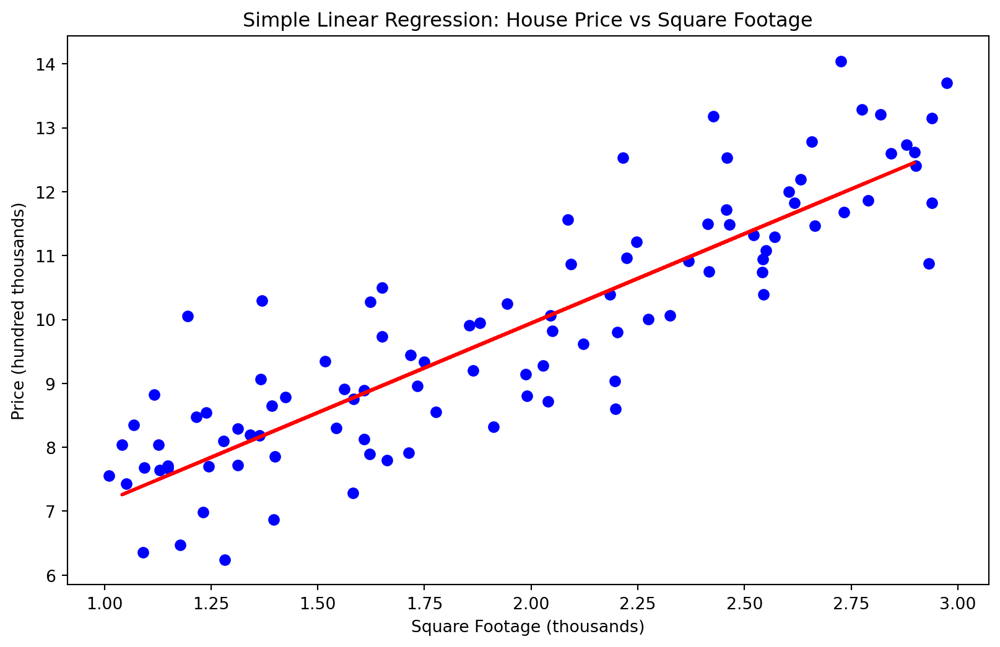
Multiple Linear Regression MSE: 1.30
Multiple Linear Regression R^2: 0.76
Polynomial Regression MSE: 0.64
Polynomial Regression R^2: 0.89/Users/ravishankar/miniforge3/lib/python3.10/site-packages/sklearn/base.py:439: UserWarning:
X does not have valid feature names, but PolynomialFeatures was fitted with feature names
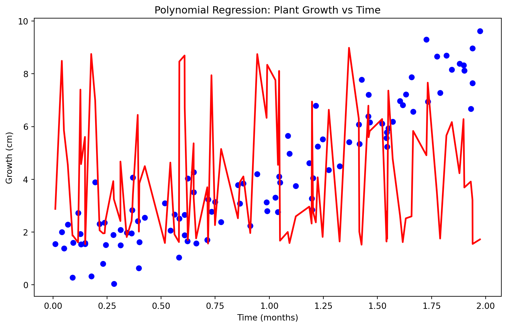
4.1.4 Assumptions of Linear Regression
Linear regression relies on several key assumptions. Violations of these assumptions can lead to biased or inefficient estimates.
Linearity: The relationship between the dependent and independent variables is linear.
- Example: A scatter plot showing a straight-line relationship between variables.
Independence: Observations are independent of each other.
- Example: No patterns in the residuals when plotted against time.
Homoscedasticity: The variance of the errors is constant across all levels of the independent variables.
- Example: Residuals plot showing no funnel shape.
Normality: The errors are normally distributed.
- Example: A Q-Q plot of residuals showing a straight-line pattern.
No multicollinearity: Independent variables are not highly correlated.
- Example: Variance Inflation Factor (VIF) values less than 10.
4.1.5 Gradient Descent for Linear Regression
Gradient descent is an iterative optimization algorithm used to minimize the cost function in linear regression.
Example: Finding the optimal parameters for a regression model predicting sales based on advertising spend.
Formula: \[ \beta_j := \beta_j - \alpha \frac{\partial J(\beta)}{\partial \beta_j} \] where \(\alpha\) is the learning rate, \(J(\beta)\) is the cost function, and \(\frac{\partial J(\beta)}{\partial \beta_j}\) is the partial derivative of the cost function with respect to \(\beta_j\).
Steps:
Initialize parameters: Start with initial guesses for \(\beta_0, \beta_1, \ldots, \beta_p\).
Compute the cost function: Calculate the mean squared error (MSE) for the current parameters.
Formula: \[ J(\beta) = \frac{1}{2m} \sum_{i=1}^{m} (h_\beta(x_i) - y_i)^2 \]
Update parameters: Adjust the parameters in the direction that reduces the cost function.
Repeat: Iterate the process until convergence.
Show the code
import numpy as np
import pandas as pd
import matplotlib.pyplot as plt
# Generate synthetic data: Predicting sales based on advertising spend
np.random.seed(42)
advertising_spend = 2 * np.random.rand(100, 1)
sales = 4 + 3 * advertising_spend + np.random.randn(100, 1)
# Convert to pandas DataFrame
data = pd.DataFrame({'AdvertisingSpend': advertising_spend.flatten(), 'Sales': sales.flatten()})
# Feature matrix and target vector
X = data[['AdvertisingSpend']].values
y = data['Sales'].values
# Add a column of ones to include the intercept term (bias) in the model
X_b = np.c_[np.ones((100, 1)), X]
# Gradient Descent function for Linear Regression
def gradient_descent(X, y, learning_rate=0.1, n_iterations=1000):
m = len(y)
theta = np.random.randn(2, 1) # Random initialization of parameters
for iteration in range(n_iterations):
gradients = (2/m) * X.T.dot(X.dot(theta) - y.reshape(-1, 1))
theta = theta - learning_rate * gradients
return theta
# Step 1: Initialize parameters
learning_rate = 0.1
n_iterations = 1000
# Step 2: Compute the cost function and Step 3: Update parameters
theta_optimal = gradient_descent(X_b, y, learning_rate, n_iterations)
# Predictions using the optimal parameters
X_new = np.array([[0], [2]]) # New advertising spend data for predictions
X_new_b = np.c_[np.ones((2, 1)), X_new]
y_predict = X_new_b.dot(theta_optimal)
# Plot the results
plt.figure(figsize=(10, 6))
plt.scatter(X, y, color='blue')
plt.plot(X_new, y_predict, color='red', linewidth=2)
plt.xlabel('Advertising Spend (in $1000)')
plt.ylabel('Sales (in $1000)')
plt.title('Gradient Descent for Linear Regression: Sales vs Advertising Spend')
plt.show()
# Print the optimal parameters
print(f'Optimal parameters (theta): {theta_optimal.flatten()}')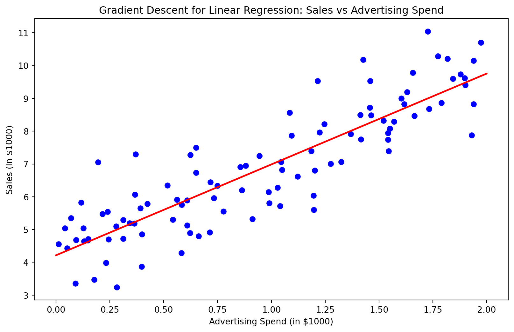
Optimal parameters (theta): [4.21509616 2.77011339]4.2 Logistic Regression
Logistic regression is used to model the probability of a binary or categorical outcome based on one or more predictor variables. It is a type of generalized linear model.
4.2.1 Binary Logistic Regression
Binary logistic regression models the probability of a binary outcome (e.g., success/failure) as a function of one or more predictor variables.
Example: Predicting whether a customer will purchase a product (yes/no) based on age and income.
Formula: \[ \log \left( \frac{p}{1-p} \right) = \beta_0 + \beta_1 x_1 + \beta_2 x_2 + \cdots + \beta_p x_p \] where \(p\) is the probability of the event occurring.
Steps:
Estimate the parameters: Use maximum likelihood estimation to estimate \(\beta_0, \beta_1, \ldots, \beta_p\).
Make predictions: Calculate the probability of the outcome using the logistic function.
Formula: \[ p = \frac{1}{1 + e^{-(\beta_0 + \beta_1 x_1 + \beta_2 x_2 + \cdots + \beta_p x_p)}} \]
Show the code
import numpy as np
import pandas as pd
from sklearn.model_selection import train_test_split
from sklearn.linear_model import LogisticRegression
from sklearn.metrics import accuracy_score, confusion_matrix, classification_report
import matplotlib.pyplot as plt
import seaborn as sns
# Generate synthetic data: Predicting product purchase based on age and income
np.random.seed(42)
age = np.random.randint(18, 70, size=(100, 1))
income = np.random.randint(20000, 100000, size=(100, 1))
purchase = (0.3 * age + 0.00002 * income + np.random.randn(100, 1)).flatten()
purchase = (purchase > purchase.mean()).astype(int)
# Convert to pandas DataFrame
data = pd.DataFrame({'Age': age.flatten(), 'Income': income.flatten(), 'Purchase': purchase})
# Feature matrix and target vector
X = data[['Age', 'Income']]
y = data['Purchase']
# Split the data into training and testing sets
X_train, X_test, y_train, y_test = train_test_split(X, y, test_size=0.2, random_state=42)
# Initialize and train the logistic regression model
logistic_model = LogisticRegression()
logistic_model.fit(X_train, y_train)
# Make predictions
y_pred = logistic_model.predict(X_test)
# Evaluate the model
accuracy = accuracy_score(y_test, y_pred)
conf_matrix = confusion_matrix(y_test, y_pred)
class_report = classification_report(y_test, y_pred)
print(f'Accuracy: {accuracy:.2f}')
print('Confusion Matrix:')
print(conf_matrix)
print('Classification Report:')
print(class_report)
# Plotting decision boundary
plt.figure(figsize=(10, 6))
sns.scatterplot(data=data, x='Age', y='Income', hue='Purchase', palette='coolwarm')
# Create a mesh grid for decision boundary
age_min, age_max = X['Age'].min() - 1, X['Age'].max() + 1
income_min, income_max = X['Income'].min() - 1000, X['Income'].max() + 1000
xx, yy = np.meshgrid(np.arange(age_min, age_max, 0.5), np.arange(income_min, income_max, 1000))
Z = logistic_model.predict(np.c_[xx.ravel(), yy.ravel()])
Z = Z.reshape(xx.shape)
plt.contourf(xx, yy, Z, alpha=0.2, cmap='coolwarm')
plt.xlabel('Age')
plt.ylabel('Income')
plt.title('Binary Logistic Regression: Purchase Prediction')
plt.show()
# Print the model's parameters
print(f'Intercept: {logistic_model.intercept_[0]}')
print(f'Coefficients: {logistic_model.coef_[0]}')Accuracy: 0.75
Confusion Matrix:
[[7 2]
[3 8]]
Classification Report:
precision recall f1-score support
0 0.70 0.78 0.74 9
1 0.80 0.73 0.76 11
accuracy 0.75 20
macro avg 0.75 0.75 0.75 20
weighted avg 0.76 0.75 0.75 20
/Users/ravishankar/miniforge3/lib/python3.10/site-packages/sklearn/base.py:439: UserWarning:
X does not have valid feature names, but LogisticRegression was fitted with feature names
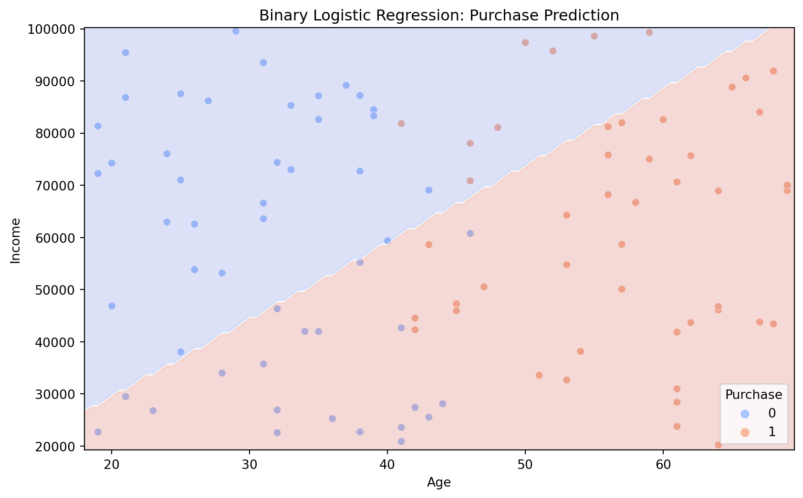
Intercept: -0.00020133720147096868
Coefficients: [ 6.23708757e-02 -4.22361215e-05]4.2.2 Multinomial Logistic Regression
Multinomial logistic regression models the probability of multiple categorical outcomes (more than two) based on one or more predictor variables.
Example: Predicting the type of vehicle (car, truck, bike) a person will buy based on their age, income, and city.
Formula: \[ \log \left( \frac{p_k}{p_0} \right) = \beta_{0k} + \beta_{1k} x_1 + \beta_{2k} x_2 + \cdots + \beta_{pk} x_p \] where \(p_k\) is the probability of the k-th category and \(p_0\) is the probability of the reference category.
Steps:
Estimate the parameters: Use maximum likelihood estimation to estimate \(\beta_{0k}, \beta_{1k}, \ldots, \beta_{pk}\) for each category.
Make predictions: Calculate the probability of each category using the logistic function.
Show the code
import numpy as np
import pandas as pd
from sklearn.model_selection import train_test_split
from sklearn.linear_model import LogisticRegression
from sklearn.metrics import accuracy_score, confusion_matrix, classification_report
import matplotlib.pyplot as plt
import seaborn as sns
# Generate synthetic data: Predicting vehicle type based on age, income, and city
np.random.seed(42)
age = np.random.randint(18, 70, size=(200, 1))
income = np.random.randint(20000, 100000, size=(200, 1))
city = np.random.choice(['CityA', 'CityB', 'CityC'], size=(200, 1))
# Vehicle type: 0 - Car, 1 - Truck, 2 - Bike
vehicle_type = (0.3 * age + 0.00002 * income + np.random.randn(200, 1)).flatten()
vehicle_type = np.where(vehicle_type > np.percentile(vehicle_type, 67), 2, np.where(vehicle_type > np.percentile(vehicle_type, 33), 1, 0))
# Convert to pandas DataFrame
data = pd.DataFrame({'Age': age.flatten(), 'Income': income.flatten(), 'City': city.flatten(), 'VehicleType': vehicle_type})
# Convert categorical variable 'City' to dummy variables
data = pd.get_dummies(data, columns=['City'], drop_first=True)
# Feature matrix and target vector
X = data[['Age', 'Income', 'City_CityB', 'City_CityC']]
y = data['VehicleType']
# Split the data into training and testing sets
X_train, X_test, y_train, y_test = train_test_split(X, y, test_size=0.2, random_state=42)
# Initialize and train the multinomial logistic regression model
logistic_model = LogisticRegression(multi_class='multinomial', solver='lbfgs', max_iter=1000)
logistic_model.fit(X_train, y_train)
# Make predictions
y_pred = logistic_model.predict(X_test)
# Evaluate the model
accuracy = accuracy_score(y_test, y_pred)
conf_matrix = confusion_matrix(y_test, y_pred)
class_report = classification_report(y_test, y_pred)
print(f'Accuracy: {accuracy:.2f}')
print('Confusion Matrix:')
print(conf_matrix)
print('Classification Report:')
print(class_report)
# Print the model's parameters
print(f'Intercepts: {logistic_model.intercept_}')
print(f'Coefficients: {logistic_model.coef_}')Accuracy: 0.57
Confusion Matrix:
[[9 1 3]
[4 6 9]
[0 0 8]]
Classification Report:
precision recall f1-score support
0 0.69 0.69 0.69 13
1 0.86 0.32 0.46 19
2 0.40 1.00 0.57 8
accuracy 0.57 40
macro avg 0.65 0.67 0.58 40
weighted avg 0.71 0.57 0.56 40
Intercepts: [ 8.97948195e-04 1.00509902e-05 -9.07999186e-04]
Coefficients: [[-5.79159626e-02 3.31799508e-05 2.32288011e-04 -4.79284122e-05]
[ 7.68122008e-03 -1.77792564e-06 -2.50402229e-04 1.39359472e-04]
[ 5.02347426e-02 -3.14020252e-05 1.81142184e-05 -9.14310598e-05]]4.2.3 Ordinal Logistic Regression
Ordinal logistic regression models the probability of an ordinal outcome (ordered categories) based on one or more predictor variables.
Example: Predicting the satisfaction level (very satisfied, satisfied, neutral, dissatisfied, very dissatisfied) of a customer based on service quality and response time.
Formula: \[ \log \left( \frac{P(Y \leq j)}{P(Y > j)} \right) = \theta_j - (\beta_1 x_1 + \beta_2 x_2 + \cdots + \beta_p x_p) \] where \(P(Y \leq j)\) is the probability of being in category \(j\) or lower, and \(\theta_j\) is the threshold parameter for category \(j\).
Steps:
Estimate the parameters: Use maximum likelihood estimation to estimate \(\theta_j\) and \(\beta_1, \beta_2, \ldots, \beta_p\).
Make predictions: Calculate the probability of each category using the logistic function.
Show the code
import numpy as np
import pandas as pd
from sklearn.model_selection import train_test_split
from sklearn.preprocessing import StandardScaler
import statsmodels.api as sm
from statsmodels.miscmodels.ordinal_model import OrderedModel
from sklearn.metrics import accuracy_score, confusion_matrix, classification_report
# Generate synthetic data: Predicting customer satisfaction based on service quality and response time
np.random.seed(42)
service_quality = np.random.randint(1, 6, size=(200, 1)) # Scale from 1 to 5
response_time = np.random.randint(1, 60, size=(200, 1)) # Response time in minutes
satisfaction = (0.5 * service_quality - 0.1 * response_time + np.random.randn(200, 1)).flatten()
satisfaction = np.where(satisfaction > np.percentile(satisfaction, 80), 4,
np.where(satisfaction > np.percentile(satisfaction, 60), 3,
np.where(satisfaction > np.percentile(satisfaction, 40), 2,
np.where(satisfaction > np.percentile(satisfaction, 20), 1, 0))))
# Convert to pandas DataFrame
data = pd.DataFrame({'ServiceQuality': service_quality.flatten(), 'ResponseTime': response_time.flatten(), 'Satisfaction': satisfaction})
# Feature matrix and target vector
X = data[['ServiceQuality', 'ResponseTime']]
y = data['Satisfaction']
# Standardize the features
scaler = StandardScaler()
X_scaled = scaler.fit_transform(X)
# Split the data into training and testing sets
X_train, X_test, y_train, y_test = train_test_split(X_scaled, y, test_size=0.2, random_state=42)
# Initialize and train the ordinal logistic regression model
ordinal_model = OrderedModel(y_train, X_train, distr='logit')
ordinal_results = ordinal_model.fit(method='bfgs')
# Make predictions
y_pred = ordinal_results.model.predict(ordinal_results.params, exog=X_test).argmax(axis=1)
# Evaluate the model
accuracy = accuracy_score(y_test, y_pred)
conf_matrix = confusion_matrix(y_test, y_pred)
class_report = classification_report(y_test, y_pred)
print(f'Accuracy: {accuracy:.2f}')
print('Confusion Matrix:')
print(conf_matrix)
print('Classification Report:')
print(class_report)
# Print the model's parameters
print('Model Parameters:')
print(ordinal_results.params)Optimization terminated successfully.
Current function value: 1.086932
Iterations: 18
Function evaluations: 19
Gradient evaluations: 19
Accuracy: 0.57
Confusion Matrix:
[[6 2 0 0 0]
[5 3 4 0 0]
[0 0 7 1 0]
[0 0 1 4 0]
[0 0 1 3 3]]
Classification Report:
precision recall f1-score support
0 0.55 0.75 0.63 8
1 0.60 0.25 0.35 12
2 0.54 0.88 0.67 8
3 0.50 0.80 0.62 5
4 1.00 0.43 0.60 7
accuracy 0.57 40
macro avg 0.64 0.62 0.57 40
weighted avg 0.63 0.57 0.55 40
Model Parameters:
x1 0.880499
x2 -2.447663
0/1 -2.755626
1/2 0.568617
2/3 0.609612
3/4 0.707513
dtype: float644.2.4 Maximum Likelihood Estimation
Maximum likelihood estimation (MLE) is a method used to estimate the parameters of a statistical model. It finds the parameter values that maximize the likelihood of observing the given data.
Example: Estimating the parameters of a logistic regression model predicting whether a patient has a disease based on their symptoms.
Steps:
Define the likelihood function: The likelihood function is the probability of the observed data as a function of the parameters.
Compute the log-likelihood: Taking the logarithm of the likelihood function simplifies the calculations and turns the product into a sum.
Formula: \[ \log L(\beta) = \sum_{i=1}^{n} \left( y_i \log p_i + (1 - y_i) \log (1 - p_i) \right) \]
Differentiate the log-likelihood: Find the partial derivatives of the log-likelihood with respect to each parameter.
Set the derivatives to zero and solve: Solve the resulting system of equations to find the parameter estimates.
Iterate if necessary: Use iterative methods like Newton-Raphson or gradient descent if a closed-form solution is not available.
Advanced considerations in linear and logistic regression include:
Model Diagnostics: Assess model assumptions and fit using residual plots, goodness-of-fit tests, and other diagnostic tools.
Regularization: Apply techniques like Lasso and Ridge regression to prevent overfitting and handle multicollinearity.
Feature Engineering: Create interaction terms, polynomial features, and other transformations to capture complex relationships in the data.
Validation: Use cross-validation and bootstrapping to ensure the model generalizes well to unseen data.
Interpretability: Understand the coefficients and their implications, and use tools like SHAP values to explain model predictions.
Show the code
import numpy as np
import pandas as pd
from scipy.optimize import minimize
from sklearn.model_selection import train_test_split
from sklearn.preprocessing import StandardScaler
from sklearn.metrics import accuracy_score, confusion_matrix, classification_report
# Generate synthetic data: Predicting disease presence based on symptoms
np.random.seed(42)
symptom1 = np.random.rand(200, 1) # Symptom 1 (continuous)
symptom2 = np.random.rand(200, 1) # Symptom 2 (continuous)
disease = (1.5 * symptom1 + 2.0 * symptom2 + np.random.randn(200, 1)).flatten()
disease = (disease > np.percentile(disease, 50)).astype(int) # Binary outcome (0 or 1)
# Convert to pandas DataFrame
data = pd.DataFrame({'Symptom1': symptom1.flatten(), 'Symptom2': symptom2.flatten(), 'Disease': disease})
# Feature matrix and target vector
X = data[['Symptom1', 'Symptom2']]
y = data['Disease']
# Standardize the features
scaler = StandardScaler()
X_scaled = scaler.fit_transform(X)
# Add intercept term to feature matrix
X_scaled = np.c_[np.ones(X_scaled.shape[0]), X_scaled]
# Define the logistic function
def sigmoid(z):
return 1 / (1 + np.exp(-z))
# Define the log-likelihood function for logistic regression
def log_likelihood(beta, X, y):
z = np.dot(X, beta)
log_l = np.sum(y * z - np.log(1 + np.exp(z)))
return -log_l # Return negative log-likelihood for minimization
# Initialize parameters
initial_beta = np.zeros(X_scaled.shape[1])
# Estimate the parameters using MLE
result = minimize(log_likelihood, initial_beta, args=(X_scaled, y), method='BFGS')
beta_hat = result.x
# Print the estimated parameters
print('Estimated parameters (beta):', beta_hat)
# Make predictions using the estimated parameters
z = np.dot(X_scaled, beta_hat)
y_pred_prob = sigmoid(z)
y_pred = (y_pred_prob >= 0.5).astype(int)
# Evaluate the model
accuracy = accuracy_score(y, y_pred)
conf_matrix = confusion_matrix(y, y_pred)
class_report = classification_report(y, y_pred)
print(f'Accuracy: {accuracy:.2f}')
print('Confusion Matrix:')
print(conf_matrix)
print('Classification Report:')
print(class_report)
# Model Diagnostics: Residual Plot
residuals = y - y_pred_prob
plt.figure(figsize=(10, 6))
plt.scatter(y_pred_prob, residuals, alpha=0.5)
plt.axhline(y=0, color='r', linestyle='--')
plt.xlabel('Predicted Probability')
plt.ylabel('Residuals')
plt.title('Residual Plot')
plt.show()Estimated parameters (beta): [-0.01385074 0.51100559 0.81264592]
Accuracy: 0.69
Confusion Matrix:
[[66 34]
[29 71]]
Classification Report:
precision recall f1-score support
0 0.69 0.66 0.68 100
1 0.68 0.71 0.69 100
accuracy 0.69 200
macro avg 0.69 0.69 0.68 200
weighted avg 0.69 0.69 0.68 200
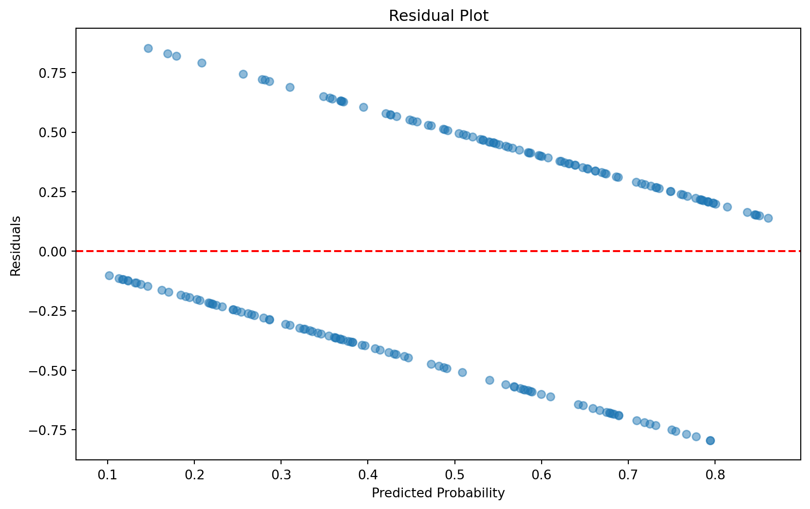
4.3 k-Nearest Neighbors (k-NN)
k-Nearest Neighbors (k-NN) is a non-parametric, lazy learning algorithm used for both classification and regression. It makes predictions based on the k training samples that are closest to a given query point.
4.3.1 Distance Metrics
Distance metrics are crucial in k-NN as they determine how the similarity between data points is measured. Different metrics can significantly impact the algorithm’s performance.
4.3.1.1 Euclidean Distance
Euclidean distance is the most common distance metric used in k-NN. It calculates the straight-line distance between two points in Euclidean space.
Formula: \[ d(x, y) = \sqrt{\sum_{i=1}^{n} (x_i - y_i)^2} \] where \(x\) and \(y\) are two points in n-dimensional space.
Example: Calculating the distance between two points (2, 3) and (5, 7).
4.3.1.2 Manhattan Distance
Manhattan distance, also known as L1 distance or city block distance, calculates the distance between two points by summing the absolute differences of their coordinates.
Formula: \[ d(x, y) = \sum_{i=1}^{n} |x_i - y_i| \]
Example: Calculating the distance between two points (2, 3) and (5, 7).
4.3.1.3 Minkowski Distance
Minkowski distance is a generalized form of Euclidean and Manhattan distances. It introduces a parameter \(p\) that determines the type of distance metric.
Formula: \[ d(x, y) = \left( \sum_{i=1}^{n} |x_i - y_i|^p \right)^{\frac{1}{p}} \]
Example: When \(p = 2\), Minkowski distance is equivalent to Euclidean distance. When \(p = 1\), it is equivalent to Manhattan distance.
4.3.2 Choosing the Optimal k
Choosing the optimal number of neighbors (k) is crucial for the performance of the k-NN algorithm. The optimal k can be found using methods like cross-validation.
Steps:
Initialize a range of k values: For example, k from 1 to 20.
Perform cross-validation: Use k-fold cross-validation to evaluate the performance of the model for each value of k.
Select the k with the best performance: Choose the k that results in the lowest cross-validation error.
Example: Using 5-fold cross-validation to find the optimal k for a dataset.
4.3.3 Weighted k-NN
In weighted k-NN, closer neighbors have more influence on the prediction than distant ones. This can improve the performance of the algorithm, especially when there is a large variation in distances among the nearest neighbors.
Formula for weighted k-NN classification: \[ \hat{y} = \frac{\sum_{i=1}^{k} w_i y_i}{\sum_{i=1}^{k} w_i} \] where \(w_i = \frac{1}{d(x, x_i)}\) and \(y_i\) is the class label of the i-th nearest neighbor.
Steps:
Compute distances: Calculate the distances between the query point and all points in the training set.
Assign weights: Assign a weight to each of the k nearest neighbors based on their distances.
Make predictions: For classification, take a weighted vote of the neighbors. For regression, compute a weighted average.
Example: Using weighted k-NN to predict the price of a house based on its features.
4.3.4 k-NN for Regression
k-NN can also be used for regression tasks, where the goal is to predict a continuous value rather than a class label.
Formula for k-NN regression: \[ \hat{y} = \frac{1}{k} \sum_{i=1}^{k} y_i \] where \(\hat{y}\) is the predicted value, and \(y_i\) are the values of the k nearest neighbors.
Steps:
Compute distances: Calculate the distances between the query point and all points in the training set.
Select k nearest neighbors: Identify the k points with the smallest distances.
Make predictions: Compute the average (or weighted average) of the target values of the k nearest neighbors.
Example: Using k-NN regression to predict the temperature based on historical weather data.
Advanced considerations in k-NN include:
Scaling: Ensure features are on the same scale, as distance metrics are sensitive to the scale of the data.
Dimensionality Reduction: Use techniques like PCA to reduce the dimensionality of the data, as high-dimensional spaces can lead to sparse data and reduce the effectiveness of k-NN.
Efficiency: Implement efficient search algorithms like KD-trees or ball trees to speed up the nearest neighbor search, especially for large datasets.
Show the code
import numpy as np
import pandas as pd
import matplotlib.pyplot as plt
from sklearn.model_selection import train_test_split, cross_val_score
from sklearn.neighbors import KNeighborsClassifier, KNeighborsRegressor
from sklearn.preprocessing import StandardScaler
from sklearn.metrics import accuracy_score, mean_squared_error
import seaborn as sns
# Generate synthetic data for k-NN classification and regression
np.random.seed(42)
features = np.random.rand(200, 2) # Two features
target_class = (features[:, 0] + features[:, 1] + np.random.randn(200) * 0.1 > 1).astype(int) # Binary classification target
target_reg = features[:, 0] + features[:, 1] + np.random.randn(200) * 0.1 # Regression target
# Convert to pandas DataFrame
data_class = pd.DataFrame({'Feature1': features[:, 0], 'Feature2': features[:, 1], 'Target': target_class})
data_reg = pd.DataFrame({'Feature1': features[:, 0], 'Feature2': features[:, 1], 'Target': target_reg})
# Split the data into training and testing sets for classification
X_class = data_class[['Feature1', 'Feature2']]
y_class = data_class['Target']
X_train_class, X_test_class, y_train_class, y_test_class = train_test_split(X_class, y_class, test_size=0.2, random_state=42)
# Split the data into training and testing sets for regression
X_reg = data_reg[['Feature1', 'Feature2']]
y_reg = data_reg['Target']
X_train_reg, X_test_reg, y_train_reg, y_test_reg = train_test_split(X_reg, y_reg, test_size=0.2, random_state=42)
# Standardize the features
scaler_class = StandardScaler()
X_train_class_scaled = scaler_class.fit_transform(X_train_class)
X_test_class_scaled = scaler_class.transform(X_test_class)
scaler_reg = StandardScaler()
X_train_reg_scaled = scaler_reg.fit_transform(X_train_reg)
X_test_reg_scaled = scaler_reg.transform(X_test_reg)
# 4.3.1.1 Euclidean Distance
point1 = np.array([2, 3])
point2 = np.array([5, 7])
euclidean_distance = np.sqrt(np.sum((point1 - point2) ** 2))
print(f'Euclidean Distance between {point1} and {point2}: {euclidean_distance}')
# 4.3.1.2 Manhattan Distance
manhattan_distance = np.sum(np.abs(point1 - point2))
print(f'Manhattan Distance between {point1} and {point2}: {manhattan_distance}')
# 4.3.1.3 Minkowski Distance
p = 3 # Change p to 2 for Euclidean distance, 1 for Manhattan distance
minkowski_distance = np.sum(np.abs(point1 - point2) ** p) ** (1 / p)
print(f'Minkowski Distance between {point1} and {point2} with p={p}: {minkowski_distance}')
# 4.3.2 Choosing the Optimal k using 5-fold Cross-Validation for Classification
k_range = range(1, 21)
cross_val_scores = []
for k in k_range:
knn = KNeighborsClassifier(n_neighbors=k)
scores = cross_val_score(knn, X_train_class_scaled, y_train_class, cv=5, scoring='accuracy')
cross_val_scores.append(scores.mean())
optimal_k = k_range[np.argmax(cross_val_scores)]
print(f'Optimal k for classification: {optimal_k}')
plt.figure(figsize=(10, 6))
plt.plot(k_range, cross_val_scores, marker='o')
plt.xlabel('k')
plt.ylabel('Cross-Validated Accuracy')
plt.title('Choosing the Optimal k for k-NN Classification')
plt.show()
# Train the k-NN classifier with the optimal k
knn_classifier = KNeighborsClassifier(n_neighbors=optimal_k)
knn_classifier.fit(X_train_class_scaled, y_train_class)
y_pred_class = knn_classifier.predict(X_test_class_scaled)
# Evaluate the classifier
accuracy = accuracy_score(y_test_class, y_pred_class)
print(f'Accuracy of k-NN classifier with k={optimal_k}: {accuracy:.2f}')
# 4.3.3 Weighted k-NN for Classification
weighted_knn_classifier = KNeighborsClassifier(n_neighbors=optimal_k, weights='distance')
weighted_knn_classifier.fit(X_train_class_scaled, y_train_class)
y_pred_weighted_class = weighted_knn_classifier.predict(X_test_class_scaled)
# Evaluate the weighted classifier
weighted_accuracy = accuracy_score(y_test_class, y_pred_weighted_class)
print(f'Accuracy of weighted k-NN classifier with k={optimal_k}: {weighted_accuracy:.2f}')
# 4.3.4 k-NN for Regression
knn_regressor = KNeighborsRegressor(n_neighbors=optimal_k)
knn_regressor.fit(X_train_reg_scaled, y_train_reg)
y_pred_reg = knn_regressor.predict(X_test_reg_scaled)
# Evaluate the regressor
mse = mean_squared_error(y_test_reg, y_pred_reg)
print(f'Mean Squared Error of k-NN regressor with k={optimal_k}: {mse:.2f}')
plt.figure(figsize=(10, 6))
plt.scatter(y_test_reg, y_pred_reg)
plt.xlabel('True Values')
plt.ylabel('Predicted Values')
plt.title('k-NN Regression: True vs Predicted Values')
plt.show()Euclidean Distance between [2 3] and [5 7]: 5.0
Manhattan Distance between [2 3] and [5 7]: 7
Minkowski Distance between [2 3] and [5 7] with p=3: 4.497941445275415
Optimal k for classification: 12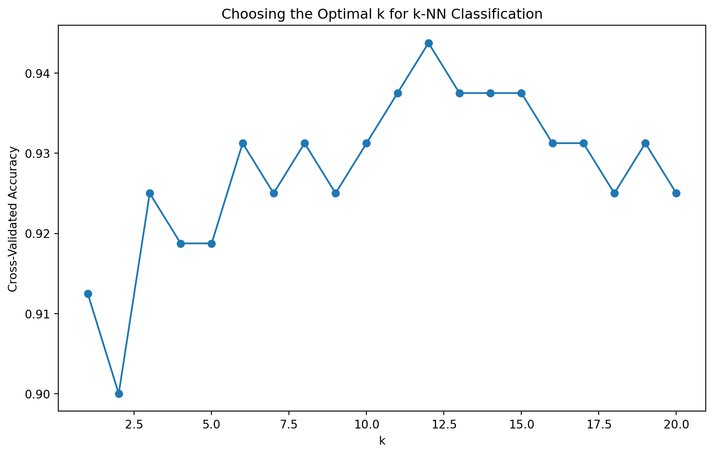
Accuracy of k-NN classifier with k=12: 0.90
Accuracy of weighted k-NN classifier with k=12: 0.93
Mean Squared Error of k-NN regressor with k=12: 0.01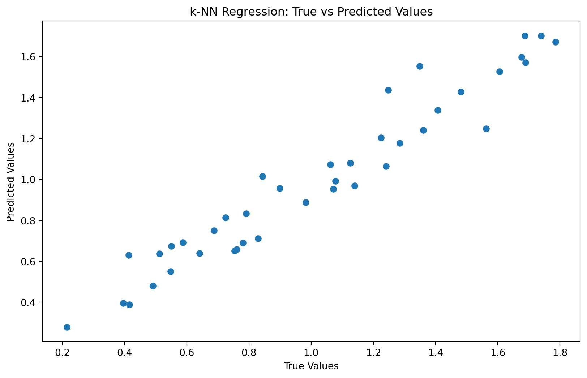
4.4 Decision Trees
Decision trees are a type of supervised learning algorithm used for both classification and regression tasks. They work by splitting the data into subsets based on the values of the input features, creating a tree-like structure of decisions.
4.4.1 Information Gain and Entropy
Information gain measures the reduction in entropy, or uncertainty, when a dataset is split on an attribute. It is used to decide which feature to split on at each step in the tree.
- Entropy:
\[ H(S) = - \sum_{i=1}^{c} p_i \log_2(p_i) \]
where \(S\) is the dataset, \(c\) is the number of classes, and \(p_i\) is the proportion of instances in class \(i\).
- Information Gain:
\[ IG(T, a) = H(T) - \sum_{v \in \text{Values}(a)} \frac{|T_v|}{|T|} H(T_v) \]
where \(T\) is the dataset, \(a\) is the attribute, \(v\) represents values of the attribute, \(T_v\) is the subset of \(T\) for which attribute \(a\) has value \(v\), and \(H(T_v)\) is the entropy of \(T_v\).
- Example: Calculating the information gain for splitting a dataset on a feature like “outlook” in a weather dataset.
Steps to Calculate Information Gain:
Calculate the entropy of the entire dataset: Determine the proportion of each class in the dataset and apply the entropy formula.
Split the dataset on the chosen attribute: Divide the data based on the different values of the attribute.
Calculate the entropy of each subset: For each subset created by the split, calculate its entropy.
Compute the weighted average of these entropies: Weight each subset’s entropy by its proportion in the dataset.
Subtract this value from the original entropy: The result is the information gain.
4.4.2 Gini Impurity
Gini impurity measures the frequency at which any element of the dataset would be mislabeled if it were randomly labeled according to the distribution of labels in the subset.
- Formula:
\[ Gini(T) = 1 - \sum_{i=1}^{c} p_i^2 \]
where \(T\) is the dataset, \(c\) is the number of classes, and \(p_i\) is the proportion of instances in class \(i\).
- Example: Calculating the Gini impurity for a node in a decision tree.
Steps to Calculate Gini Impurity:
Determine the proportion of each class in the dataset: Compute \(p_i\) for each class.
Square each proportion and sum them: Sum the squared proportions.
Subtract the sum from 1: The result is the Gini impurity.
Show the code
import numpy as np
import pandas as pd
from collections import Counter
# Generate synthetic data for a simple weather dataset
data = {
'Outlook': ['Sunny', 'Sunny', 'Overcast', 'Rainy', 'Rainy', 'Rainy', 'Overcast', 'Sunny', 'Sunny', 'Rainy', 'Sunny', 'Overcast', 'Overcast', 'Rainy'],
'Temperature': ['Hot', 'Hot', 'Hot', 'Mild', 'Cool', 'Cool', 'Cool', 'Mild', 'Cool', 'Mild', 'Mild', 'Mild', 'Hot', 'Mild'],
'Humidity': ['High', 'High', 'High', 'High', 'Normal', 'Normal', 'Normal', 'High', 'Normal', 'Normal', 'Normal', 'High', 'Normal', 'High'],
'Windy': [False, True, False, False, False, True, True, False, False, False, True, True, False, True],
'PlayTennis': ['No', 'No', 'Yes', 'Yes', 'Yes', 'No', 'Yes', 'No', 'Yes', 'Yes', 'Yes', 'Yes', 'Yes', 'No']
}
df = pd.DataFrame(data)
# Function to calculate entropy
def entropy(y):
counts = Counter(y)
probabilities = [count / len(y) for count in counts.values()]
return -sum(p * np.log2(p) for p in probabilities)
# Function to calculate information gain
def information_gain(df, split_attribute, target_attribute='PlayTennis'):
# Calculate the entropy of the full dataset
original_entropy = entropy(df[target_attribute])
# Split the dataset by the unique values of the split attribute
subsets = [df[df[split_attribute] == value] for value in df[split_attribute].unique()]
# Calculate the weighted entropy of the subsets
subset_entropy = sum((len(subset) / len(df)) * entropy(subset[target_attribute]) for subset in subsets)
# Calculate the information gain
info_gain = original_entropy - subset_entropy
return info_gain
# Example: Calculating information gain for the "Outlook" attribute
info_gain_outlook = information_gain(df, 'Outlook')
print(f'Information Gain for Outlook: {info_gain_outlook:.4f}')
# Function to calculate Gini impurity
def gini_impurity(y):
counts = Counter(y)
probabilities = [count / len(y) for count in counts.values()]
return 1 - sum(p ** 2 for p in probabilities)
# Example: Calculating Gini impurity for the PlayTennis attribute
gini_play_tennis = gini_impurity(df['PlayTennis'])
print(f'Gini Impurity for PlayTennis: {gini_play_tennis:.4f}')Information Gain for Outlook: 0.2467
Gini Impurity for PlayTennis: 0.45924.4.3 CART Algorithm
The Classification and Regression Tree (CART) algorithm is a popular decision tree algorithm that uses Gini impurity for classification and mean squared error for regression.
Steps of the CART Algorithm:
Splitting:
At each node, split the data on the feature that results in the highest information gain (classification) or the lowest mean squared error (regression).
For classification:
- Calculate the Gini impurity for each possible split and choose the one that minimizes the impurity.
For regression:
- Calculate the mean squared error for each possible split and choose the one that minimizes the error.
Stopping Criteria:
Stop splitting when a predefined criterion is met, such as a maximum tree depth or a minimum number of samples per leaf.
Common stopping criteria include:
Maximum depth of the tree.
Minimum number of samples required to split an internal node.
Minimum number of samples required to be at a leaf node.
Prediction:
For classification:
- Assign the most common class in the leaf node to any new data point that falls into that leaf.
For regression:
- Assign the mean value of the target variable in the leaf node to any new data point that falls into that leaf.
- Example: Using the CART algorithm to build a decision tree for predicting whether a passenger survived the Titanic disaster.
Show the code
import pandas as pd
from sklearn.model_selection import train_test_split
from sklearn.tree import DecisionTreeClassifier, plot_tree
from sklearn.metrics import accuracy_score, confusion_matrix, classification_report
import matplotlib.pyplot as plt
# Load the Iris dataset
from sklearn.datasets import load_iris
iris = load_iris()
data = pd.DataFrame(data=iris.data, columns=iris.feature_names)
data['target'] = iris.target
# Display the first few rows of the dataset
print(data.head())
# Select features and the target variable
X = data.drop('target', axis=1)
y = data['target']
# Split the data into training and testing sets
X_train, X_test, y_train, y_test = train_test_split(X, y, test_size=0.2, random_state=42)
# Initialize the CART model (Decision Tree Classifier)
cart_model = DecisionTreeClassifier(criterion='gini', max_depth=5, min_samples_split=20, min_samples_leaf=10)
# Train the model
cart_model.fit(X_train, y_train)
# Predict the outcomes on the test set
y_pred = cart_model.predict(X_test)
# Evaluate the model
accuracy = accuracy_score(y_test, y_pred)
conf_matrix = confusion_matrix(y_test, y_pred)
class_report = classification_report(y_test, y_pred)
print(f'Accuracy: {accuracy * 100:.2f}%')
print('Confusion Matrix:')
print(conf_matrix)
print('Classification Report:')
print(class_report)
# Visualize the decision tree
plt.figure(figsize=(20, 10))
plot_tree(cart_model, feature_names=iris.feature_names, class_names=iris.target_names, filled=True)
plt.title('Decision Tree Trained on Iris Dataset')
plt.show() sepal length (cm) sepal width (cm) petal length (cm) petal width (cm) \
0 5.1 3.5 1.4 0.2
1 4.9 3.0 1.4 0.2
2 4.7 3.2 1.3 0.2
3 4.6 3.1 1.5 0.2
4 5.0 3.6 1.4 0.2
target
0 0
1 0
2 0
3 0
4 0
Accuracy: 96.67%
Confusion Matrix:
[[10 0 0]
[ 0 8 1]
[ 0 0 11]]
Classification Report:
precision recall f1-score support
0 1.00 1.00 1.00 10
1 1.00 0.89 0.94 9
2 0.92 1.00 0.96 11
accuracy 0.97 30
macro avg 0.97 0.96 0.97 30
weighted avg 0.97 0.97 0.97 30
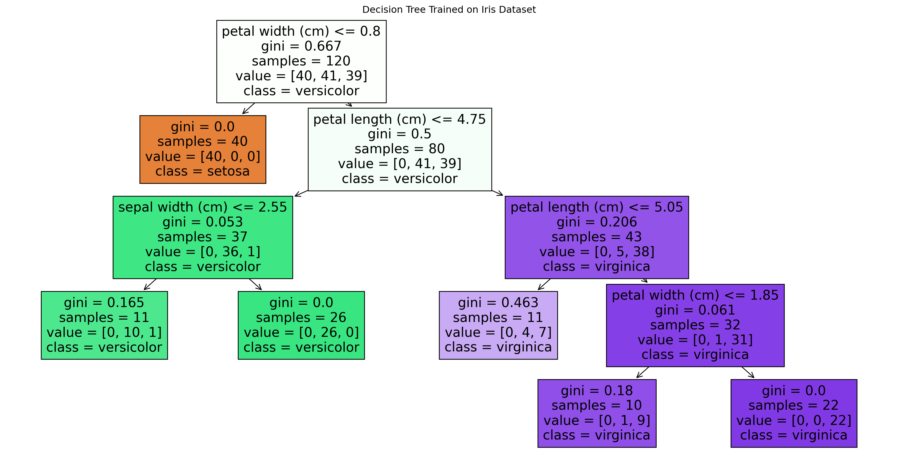
4.4.4 Pruning Techniques
Pruning techniques are used to reduce the size of a decision tree by removing parts of the tree that do not provide additional power in classifying instances. This helps to prevent overfitting.
4.4.4.1 Pre-pruning
Pre-pruning, also known as early stopping, halts the growth of the tree before it reaches its maximum size.
Methods:
Maximum Depth: Limit the maximum depth of the tree.
Minimum Samples per Leaf: Require a minimum number of samples in each leaf node.
Minimum Information Gain: Set a threshold for the minimum information gain required to make a split.
Example: Limiting the maximum depth of a decision tree to 5 levels to prevent overfitting.
4.4.4.2 Post-pruning
Post-pruning involves building the entire tree first and then removing nodes that do not provide significant improvements.
Methods:
Cost Complexity Pruning: Use a validation set to prune branches that do not improve the validation accuracy.
Reduced Error Pruning: Evaluate the impact of removing each node on the training set and prune nodes that do not reduce accuracy.
Example: Using cross-validation to determine which branches of the tree to prune after it has been fully grown.
Steps for Post-pruning:
Grow the full tree: Allow the decision tree to grow to its maximum size.
Evaluate each node for pruning: For each non-leaf node, evaluate whether its removal (and replacement with a leaf node) would improve the model’s performance on a validation set.
Prune the tree: Remove nodes that do not contribute to improved performance or reduce complexity without harming the model’s accuracy.
Show the code
import pandas as pd
from sklearn.model_selection import train_test_split, cross_val_score
from sklearn.tree import DecisionTreeClassifier, plot_tree
from sklearn.metrics import accuracy_score, confusion_matrix, classification_report
import matplotlib.pyplot as plt
import numpy as np
# Load the Titanic dataset from Kaggle
url = 'https://raw.githubusercontent.com/datasciencedojo/datasets/master/titanic.csv'
data = pd.read_csv(url)
# Select relevant features and the target variable
features = ['Pclass', 'Sex', 'Age', 'SibSp', 'Parch', 'Fare']
data = data.dropna(subset=['Age'])
# Convert categorical variables to numerical
data['Sex'] = data['Sex'].map({'male': 0, 'female': 1})
# Fill missing values with the median for numerical features
for feature in ['Age', 'Fare']:
data[feature].fillna(data[feature].median(), inplace=True)
X = data[features]
y = data['Survived']
# Split the data into training and testing sets
X_train, X_test, y_train, y_test = train_test_split(X, y, test_size=0.2, random_state=42)
# Pre-pruning Example: Limiting the maximum depth of a decision tree
pre_pruned_model = DecisionTreeClassifier(criterion='gini', max_depth=5, min_samples_split=20, min_samples_leaf=10)
pre_pruned_model.fit(X_train, y_train)
# Predict the outcomes on the test set
y_pred_pre_pruned = pre_pruned_model.predict(X_test)
# Evaluate the pre-pruned model
accuracy_pre_pruned = accuracy_score(y_test, y_pred_pre_pruned)
conf_matrix_pre_pruned = confusion_matrix(y_test, y_pred_pre_pruned)
class_report_pre_pruned = classification_report(y_test, y_pred_pre_pruned)
print(f'Pre-pruned Model Accuracy: {accuracy_pre_pruned * 100:.2f}%')
print('Pre-pruned Model Confusion Matrix:')
print(conf_matrix_pre_pruned)
print('Pre-pruned Model Classification Report:')
print(class_report_pre_pruned)
# Visualize the pre-pruned decision tree
plt.figure(figsize=(20, 10))
plot_tree(pre_pruned_model, feature_names=features, class_names=['Not Survived', 'Survived'], filled=True)
plt.title('Pre-pruned Decision Tree')
plt.show()
# Post-pruning Example: Cost Complexity Pruning
# Grow a large tree first
full_model = DecisionTreeClassifier(criterion='gini', random_state=42)
full_model.fit(X_train, y_train)
# Perform cost complexity pruning
path = full_model.cost_complexity_pruning_path(X_train, y_train)
ccp_alphas, impurities = path.ccp_alphas, path.impurities
# Train models for each alpha value
models = []
for ccp_alpha in ccp_alphas:
model = DecisionTreeClassifier(random_state=42, ccp_alpha=ccp_alpha)
model.fit(X_train, y_train)
models.append(model)
# Evaluate each model using cross-validation and choose the best one
cv_scores = [np.mean(cross_val_score(model, X_train, y_train, cv=5)) for model in models]
# Select the best model
best_alpha = ccp_alphas[np.argmax(cv_scores)]
post_pruned_model = DecisionTreeClassifier(random_state=42, ccp_alpha=best_alpha)
post_pruned_model.fit(X_train, y_train)
# Predict the outcomes on the test set
y_pred_post_pruned = post_pruned_model.predict(X_test)
# Evaluate the post-pruned model
accuracy_post_pruned = accuracy_score(y_test, y_pred_post_pruned)
conf_matrix_post_pruned = confusion_matrix(y_test, y_pred_post_pruned)
class_report_post_pruned = classification_report(y_test, y_pred_post_pruned)
print(f'Post-pruned Model Accuracy: {accuracy_post_pruned * 100:.2f}%')
print('Post-pruned Model Confusion Matrix:')
print(conf_matrix_post_pruned)
print('Post-pruned Model Classification Report:')
print(class_report_post_pruned)
# Visualize the post-pruned decision tree
plt.figure(figsize=(20, 10))
plot_tree(post_pruned_model, feature_names=features, class_names=['Not Survived', 'Survived'], filled=True)
plt.title('Post-pruned Decision Tree')
plt.show()/var/folders/v8/l5r44ftx4g5bx2y5fhdpcmmh0000gn/T/ipykernel_20846/2672598698.py:21: FutureWarning:
A value is trying to be set on a copy of a DataFrame or Series through chained assignment using an inplace method.
The behavior will change in pandas 3.0. This inplace method will never work because the intermediate object on which we are setting values always behaves as a copy.
For example, when doing 'df[col].method(value, inplace=True)', try using 'df.method({col: value}, inplace=True)' or df[col] = df[col].method(value) instead, to perform the operation inplace on the original object.
/var/folders/v8/l5r44ftx4g5bx2y5fhdpcmmh0000gn/T/ipykernel_20846/2672598698.py:21: FutureWarning:
A value is trying to be set on a copy of a DataFrame or Series through chained assignment using an inplace method.
The behavior will change in pandas 3.0. This inplace method will never work because the intermediate object on which we are setting values always behaves as a copy.
For example, when doing 'df[col].method(value, inplace=True)', try using 'df.method({col: value}, inplace=True)' or df[col] = df[col].method(value) instead, to perform the operation inplace on the original object.
Pre-pruned Model Accuracy: 76.92%
Pre-pruned Model Confusion Matrix:
[[73 14]
[19 37]]
Pre-pruned Model Classification Report:
precision recall f1-score support
0 0.79 0.84 0.82 87
1 0.73 0.66 0.69 56
accuracy 0.77 143
macro avg 0.76 0.75 0.75 143
weighted avg 0.77 0.77 0.77 143
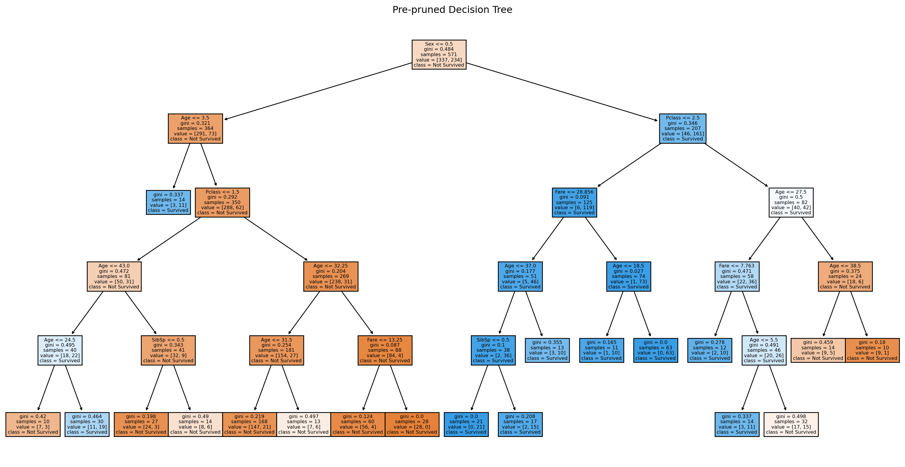
Post-pruned Model Accuracy: 75.52%
Post-pruned Model Confusion Matrix:
[[69 18]
[17 39]]
Post-pruned Model Classification Report:
precision recall f1-score support
0 0.80 0.79 0.80 87
1 0.68 0.70 0.69 56
accuracy 0.76 143
macro avg 0.74 0.74 0.74 143
weighted avg 0.76 0.76 0.76 143
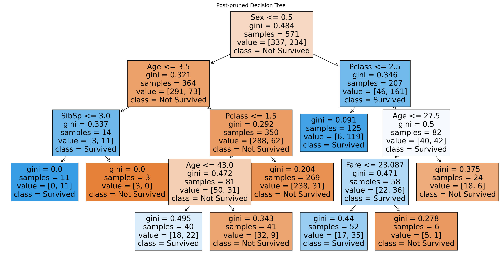
4.4.5 Handling Missing Values in Decision Trees
Decision trees can handle missing values in several ways to ensure that the model remains robust and accurate.
Methods:
Surrogate Splits: Use an alternative feature to make the split when the primary feature is missing.
- Example: If a data point is missing a value for the primary split feature, use another highly correlated feature to make the split.
Missing Value Indicator: Create a binary feature that indicates whether the value for the feature is missing.
- Example: Add an extra feature that is 1 if the value is missing and 0 otherwise.
Imputation: Fill in missing values using methods like mean, median, or mode imputation before training the tree.
- Example: Replace missing values in a dataset with the mean value of the respective feature.
Steps for Handling Missing Values:
Identify missing values: Determine which features and instances have missing values.
Choose a handling method: Decide whether to use surrogate splits, a missing value indicator, or imputation.
Implement the chosen method: Apply the selected method to the dataset before or during the tree-building process.
Advanced considerations in decision trees include:
Ensemble Methods: Combine multiple decision trees using methods like bagging (e.g., Random Forests) or boosting (e.g., Gradient Boosting) to improve accuracy and robustness.
Bagging: Builds multiple decision trees on different subsets of the data and aggregates their predictions.
Boosting: Sequentially builds trees, where each new tree focuses on correcting the errors made by the previous trees.
Feature Importance: Evaluate the importance of features based on how often they are used in splits across the trees in an ensemble.
- Example: Calculate feature importance scores for a Random Forest model to determine which features contribute most to the predictions.
Hyperparameter Tuning: Use techniques like grid search or random search to find the best hyperparameters for the decision tree model.
- Example: Perform a grid search over parameters like maximum depth, minimum samples per leaf, and the number of features to consider at each split.
Interpretability: Decision trees are highly interpretable, but complex models like Random Forests can be analyzed using tools like feature importance scores and partial dependence plots.
- Partial Dependence Plots: Show the relationship between a feature and the predicted outcome, marginalizing over the values of other features.
Detailed Examples and Applications:
Building a Decision Tree from Scratch:
Step 1: Load the dataset and prepare the data.
Step 2: Define the splitting criteria (e.g., Gini impurity or information gain).
Step 3: Recursively split the dataset based on the chosen criteria until the stopping condition is met.
Step 4: Assign the majority class or mean value of the target variable to the leaf nodes.
Step 5: Evaluate the model’s performance on a validation set.
Using Decision Trees in Practice:
Classification Example: Predicting customer churn based on demographic and usage data.
Regression Example: Estimating property prices based on features like location, size, and age.
Visualizing Decision Trees:
Use visualization tools and libraries (e.g., Graphviz, Matplotlib) to plot the structure of decision trees.
Example: Visualize the tree structure to understand how the model makes decisions and identify the most important splits.
By following these detailed steps and considerations, decision trees can be effectively utilized for various machine learning tasks, providing both predictive power and interpretability.
Show the code
import pandas as pd
from sklearn.model_selection import train_test_split, GridSearchCV
from sklearn.tree import DecisionTreeClassifier, plot_tree
from sklearn.metrics import accuracy_score, confusion_matrix, classification_report
import matplotlib.pyplot as plt
import numpy as np
from sklearn.impute import SimpleImputer
from sklearn.ensemble import RandomForestClassifier
# Load the Titanic dataset from Kaggle
url = 'https://raw.githubusercontent.com/datasciencedojo/datasets/master/titanic.csv'
data = pd.read_csv(url)
# Select relevant features and the target variable
features = ['Pclass', 'Sex', 'Age', 'SibSp', 'Parch', 'Fare', 'Embarked']
data = data.dropna(subset=['Embarked'])
# Convert categorical variables to numerical
data['Sex'] = data['Sex'].map({'male': 0, 'female': 1})
data['Embarked'] = data['Embarked'].map({'C': 0, 'Q': 1, 'S': 2})
# Identify missing values
print(data.isnull().sum())
# Imputation: Fill missing values using mean for 'Age' and 'Fare'
imputer = SimpleImputer(strategy='mean')
data[['Age', 'Fare']] = imputer.fit_transform(data[['Age', 'Fare']])
# Create a missing value indicator for 'Age' and 'Fare'
data['Age_missing'] = data['Age'].isnull().astype(int)
data['Fare_missing'] = data['Fare'].isnull().astype(int)
X = data[features + ['Age_missing', 'Fare_missing']]
y = data['Survived']
# Split the data into training and testing sets
X_train, X_test, y_train, y_test = train_test_split(X, y, test_size=0.2, random_state=42)
# Initialize the Decision Tree model with Grid Search for hyperparameter tuning
param_grid = {
'max_depth': [3, 5, 7, 10],
'min_samples_split': [2, 10, 20],
'min_samples_leaf': [1, 5, 10]
}
grid_search = GridSearchCV(DecisionTreeClassifier(criterion='gini', random_state=42), param_grid, cv=5, scoring='accuracy')
grid_search.fit(X_train, y_train)
# Train the best model
best_model = grid_search.best_estimator_
best_model.fit(X_train, y_train)
# Predict the outcomes on the test set
y_pred = best_model.predict(X_test)
# Evaluate the model
accuracy = accuracy_score(y_test, y_pred)
conf_matrix = confusion_matrix(y_test, y_pred)
class_report = classification_report(y_test, y_pred)
print(f'Best Model Accuracy: {accuracy * 100:.2f}%')
print('Best Model Confusion Matrix:')
print(conf_matrix)
print('Best Model Classification Report:')
print(class_report)
# Visualize the decision tree
plt.figure(figsize=(20, 10))
plot_tree(best_model, feature_names=X.columns, class_names=['Not Survived', 'Survived'], filled=True)
plt.title('Decision Tree with Handling Missing Values')
plt.show()
# Train a Random Forest model
rf_model = RandomForestClassifier(n_estimators=100, random_state=42)
rf_model.fit(X_train, y_train)
# Predict the outcomes on the test set
y_pred_rf = rf_model.predict(X_test)
# Evaluate the Random Forest model
accuracy_rf = accuracy_score(y_test, y_pred_rf)
conf_matrix_rf = confusion_matrix(y_test, y_pred_rf)
class_report_rf = classification_report(y_test, y_pred_rf)
print(f'Random Forest Model Accuracy: {accuracy_rf * 100:.2f}%')
print('Random Forest Model Confusion Matrix:')
print(conf_matrix_rf)
print('Random Forest Model Classification Report:')
print(class_report_rf)
# Feature Importance in Random Forest
importances = rf_model.feature_importances_
indices = np.argsort(importances)[::-1]
plt.figure(figsize=(12, 6))
plt.title('Feature Importances')
plt.bar(range(X.shape[1]), importances[indices], align='center')
plt.xticks(range(X.shape[1]), [X.columns[i] for i in indices], rotation=90)
plt.tight_layout()
plt.show()PassengerId 0
Survived 0
Pclass 0
Name 0
Sex 0
Age 177
SibSp 0
Parch 0
Ticket 0
Fare 0
Cabin 687
Embarked 0
dtype: int64
Best Model Accuracy: 82.02%
Best Model Confusion Matrix:
[[92 17]
[15 54]]
Best Model Classification Report:
precision recall f1-score support
0 0.86 0.84 0.85 109
1 0.76 0.78 0.77 69
accuracy 0.82 178
macro avg 0.81 0.81 0.81 178
weighted avg 0.82 0.82 0.82 178
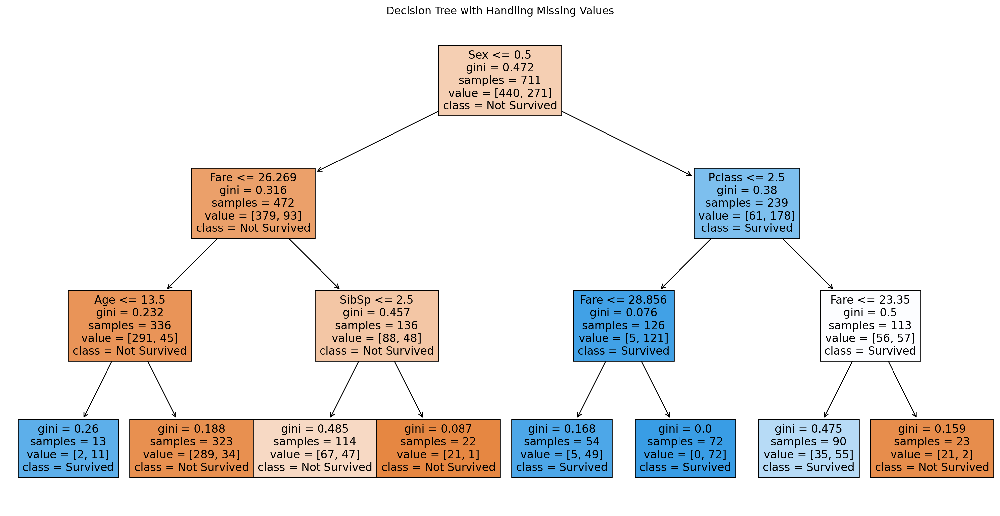
Random Forest Model Accuracy: 76.40%
Random Forest Model Confusion Matrix:
[[85 24]
[18 51]]
Random Forest Model Classification Report:
precision recall f1-score support
0 0.83 0.78 0.80 109
1 0.68 0.74 0.71 69
accuracy 0.76 178
macro avg 0.75 0.76 0.76 178
weighted avg 0.77 0.76 0.77 178
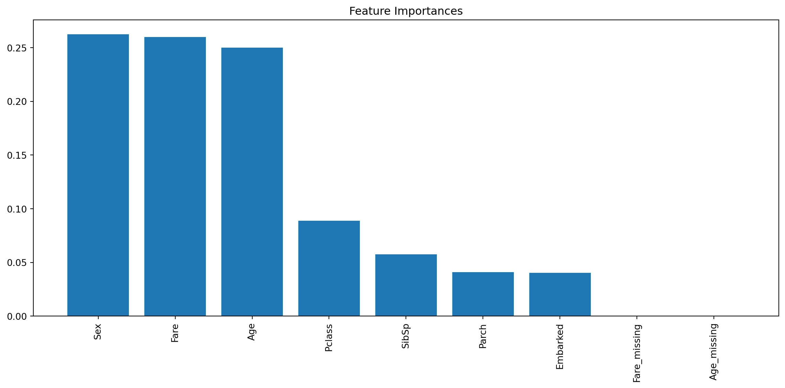
4.5 Naive Bayes
Naive Bayes is a family of simple probabilistic classifiers based on Bayes’ theorem with strong (naive) independence assumptions between the features. It is highly efficient and effective for various classification tasks.
4.5.1 Gaussian Naive Bayes
Gaussian Naive Bayes is used for continuous data that follows a Gaussian (normal) distribution. It assumes that the continuous values associated with each feature are distributed according to a Gaussian distribution.
Formula: \[ P(x_i | y) = \frac{1}{\sqrt{2 \pi \sigma_y^2}} \exp \left( -\frac{(x_i - \mu_y)^2}{2 \sigma_y^2} \right) \] where \(P(x_i | y)\) is the probability of feature \(x_i\) given class \(y\), \(\mu_y\) is the mean of the feature \(x_i\) for class \(y\), and \(\sigma_y^2\) is the variance of the feature \(x_i\) for class \(y\).
Example: Classifying iris flowers based on petal and sepal measurements.
Steps:
Calculate the mean and variance: For each feature in the dataset, calculate the mean and variance for each class.
Apply the Gaussian formula: Use the Gaussian probability density function to calculate the probability of each feature given the class.
Compute the posterior probability: Use Bayes’ theorem to compute the posterior probability for each class.
Predict the class: Choose the class with the highest posterior probability.
Show the code
import numpy as np
import pandas as pd
from sklearn.model_selection import train_test_split
from sklearn.naive_bayes import GaussianNB
from sklearn.metrics import accuracy_score, confusion_matrix, classification_report
import seaborn as sns
import matplotlib.pyplot as plt
# Load the Iris dataset
from sklearn.datasets import load_iris
iris = load_iris()
data = pd.DataFrame(data=iris.data, columns=iris.feature_names)
data['target'] = iris.target
# Display the first few rows of the dataset
print(data.head())
# Feature matrix and target vector
X = data.drop('target', axis=1)
y = data['target']
# Split the data into training and testing sets
X_train, X_test, y_train, y_test = train_test_split(X, y, test_size=0.2, random_state=42)
# Initialize and train the Gaussian Naive Bayes model
gnb = GaussianNB()
gnb.fit(X_train, y_train)
# Make predictions
y_pred = gnb.predict(X_test)
# Evaluate the model
accuracy = accuracy_score(y_test, y_pred)
conf_matrix = confusion_matrix(y_test, y_pred)
class_report = classification_report(y_test, y_pred)
print(f'Accuracy: {accuracy:.2f}')
print('Confusion Matrix:')
print(conf_matrix)
print('Classification Report:')
print(class_report)
# Visualize the confusion matrix
plt.figure(figsize=(10, 6))
sns.heatmap(conf_matrix, annot=True, fmt='d', cmap='Blues', xticklabels=iris.target_names, yticklabels=iris.target_names)
plt.xlabel('Predicted')
plt.ylabel('Actual')
plt.title('Confusion Matrix for Gaussian Naive Bayes')
plt.show() sepal length (cm) sepal width (cm) petal length (cm) petal width (cm) \
0 5.1 3.5 1.4 0.2
1 4.9 3.0 1.4 0.2
2 4.7 3.2 1.3 0.2
3 4.6 3.1 1.5 0.2
4 5.0 3.6 1.4 0.2
target
0 0
1 0
2 0
3 0
4 0
Accuracy: 1.00
Confusion Matrix:
[[10 0 0]
[ 0 9 0]
[ 0 0 11]]
Classification Report:
precision recall f1-score support
0 1.00 1.00 1.00 10
1 1.00 1.00 1.00 9
2 1.00 1.00 1.00 11
accuracy 1.00 30
macro avg 1.00 1.00 1.00 30
weighted avg 1.00 1.00 1.00 30
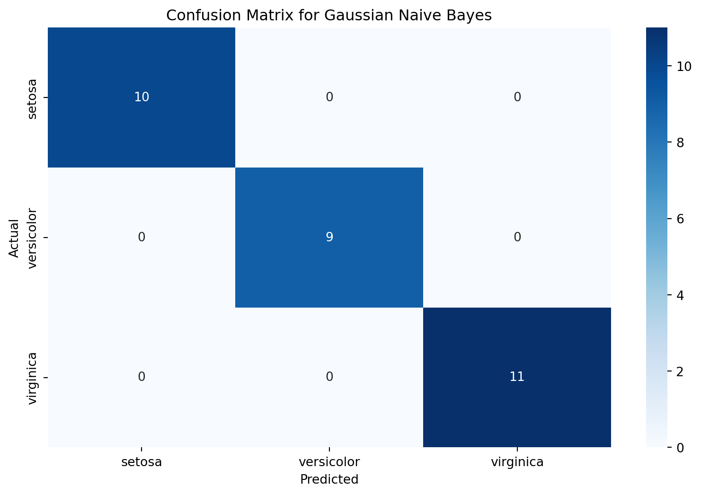
4.5.2 Multinomial Naive Bayes
Multinomial Naive Bayes is suitable for discrete data, especially for text classification where the data can be represented as word counts or term frequencies.
Formula: \[ P(x_i | y) = \frac{\text{Count}(x_i, y) + 1}{\sum_{i} \text{Count}(x_i, y) + n} \] where \(P(x_i | y)\) is the probability of feature \(x_i\) given class \(y\), \(\text{Count}(x_i, y)\) is the count of feature \(x_i\) in class \(y\), and \(n\) is the total number of features.
Example: Classifying emails as spam or not spam based on the frequency of words.
Steps:
Count the occurrences: Count the occurrences of each word in the training set for each class.
Calculate the probability: Calculate the probability of each word given the class using the formula above.
Compute the posterior probability: Use Bayes’ theorem to compute the posterior probability for each class.
Predict the class: Choose the class with the highest posterior probability.
Show the code
import numpy as np
import pandas as pd
from sklearn.model_selection import train_test_split
from sklearn.feature_extraction.text import CountVectorizer
from sklearn.naive_bayes import MultinomialNB
from sklearn.metrics import accuracy_score, confusion_matrix, classification_report
import seaborn as sns
import matplotlib.pyplot as plt
# Generate a simple dataset for spam classification
data = {
'text': [
'Free money now', 'Call this number for a free prize', 'Hello, how are you?',
'Win a free vacation', 'Can we schedule a meeting?', 'You have won a lottery',
'This is not spam, just checking in', 'Free entry in a contest', 'Cheap loans available',
'Are you coming to the party?', 'Earn extra cash easily', 'Your loan is approved',
'Dinner tonight?', 'Lowest price guarantee', 'Let’s catch up soon'
],
'label': ['spam', 'spam', 'not spam', 'spam', 'not spam', 'spam', 'not spam', 'spam', 'spam',
'not spam', 'spam', 'spam', 'not spam', 'spam', 'not spam']
}
df = pd.DataFrame(data)
# Convert labels to binary values
df['label'] = df['label'].map({'spam': 1, 'not spam': 0})
# Split the data into training and testing sets
X_train, X_test, y_train, y_test = train_test_split(df['text'], df['label'], test_size=0.2, random_state=42)
# Convert the text data to word count vectors
vectorizer = CountVectorizer()
X_train_counts = vectorizer.fit_transform(X_train)
X_test_counts = vectorizer.transform(X_test)
# Initialize and train the Multinomial Naive Bayes model
mnb = MultinomialNB()
mnb.fit(X_train_counts, y_train)
# Make predictions
y_pred = mnb.predict(X_test_counts)
# Evaluate the model
accuracy = accuracy_score(y_test, y_pred)
conf_matrix = confusion_matrix(y_test, y_pred)
class_report = classification_report(y_test, y_pred)
print(f'Accuracy: {accuracy:.2f}')
print('Confusion Matrix:')
print(conf_matrix)
print('Classification Report:')
print(class_report)
# Visualize the confusion matrix
plt.figure(figsize=(10, 6))
sns.heatmap(conf_matrix, annot=True, fmt='d', cmap='Blues', xticklabels=['Not Spam', 'Spam'], yticklabels=['Not Spam', 'Spam'])
plt.xlabel('Predicted')
plt.ylabel('Actual')
plt.title('Confusion Matrix for Multinomial Naive Bayes')
plt.show()Accuracy: 0.67
Confusion Matrix:
[[1 0]
[1 1]]
Classification Report:
precision recall f1-score support
0 0.50 1.00 0.67 1
1 1.00 0.50 0.67 2
accuracy 0.67 3
macro avg 0.75 0.75 0.67 3
weighted avg 0.83 0.67 0.67 3
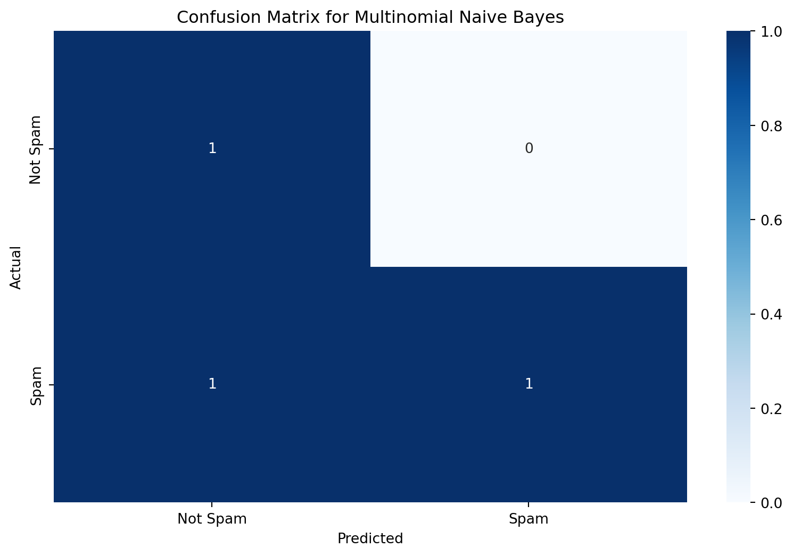
4.5.3 Bernoulli Naive Bayes
Bernoulli Naive Bayes is used for binary/boolean features. It assumes that features are binary (0 or 1) and models the presence or absence of features.
Formula: \[ P(x_i | y) = p_i^{x_i} (1 - p_i)^{1 - x_i} \] where \(P(x_i | y)\) is the probability of feature \(x_i\) given class \(y\), and \(p_i\) is the probability of feature \(x_i\) occurring in class \(y\).
Example: Classifying documents based on the presence or absence of specific words.
Steps:
Calculate the probabilities: For each feature, calculate the probability of it being present (1) or absent (0) for each class.
Apply the Bernoulli formula: Use the Bernoulli distribution to calculate the probability of each feature given the class.
Compute the posterior probability: Use Bayes’ theorem to compute the posterior probability for each class.
Predict the class: Choose the class with the highest posterior probability.
Show the code
import numpy as np
import pandas as pd
from sklearn.model_selection import train_test_split
from sklearn.feature_extraction.text import CountVectorizer
from sklearn.naive_bayes import BernoulliNB
from sklearn.metrics import accuracy_score, confusion_matrix, classification_report
# Sample text data
data = {
'text': [
'I love programming in Python',
'Python is an excellent programming language',
'I hate bugs in the code',
'Debugging code can be challenging',
'I love solving problems using Python',
'I hate syntax errors'
],
'label': [1, 1, 0, 0, 1, 0] # 1: Positive, 0: Negative
}
# Convert to DataFrame
df = pd.DataFrame(data)
# Step 1: Vectorize the text data (convert text to binary features)
vectorizer = CountVectorizer(binary=True)
X = vectorizer.fit_transform(df['text']).toarray()
y = df['label']
# Split the data into training and testing sets
X_train, X_test, y_train, y_test = train_test_split(X, y, test_size=0.2, random_state=42)
# Step 2: Train Bernoulli Naive Bayes model
model = BernoulliNB()
model.fit(X_train, y_train)
# Step 3: Predict the outcomes on the test set
y_pred = model.predict(X_test)
# Step 4: Evaluate the model
accuracy = accuracy_score(y_test, y_pred)
conf_matrix = confusion_matrix(y_test, y_pred)
class_report = classification_report(y_test, y_pred)
print(f'Model Accuracy: {accuracy * 100:.2f}%')
print('Confusion Matrix:')
print(conf_matrix)
print('Classification Report:')
print(class_report)
# Advanced: Show the presence/absence matrix for the features
feature_names = vectorizer.get_feature_names_out()
presence_absence_matrix = pd.DataFrame(X, columns=feature_names)
print('Presence/Absence Matrix:')
print(presence_absence_matrix)Model Accuracy: 100.00%
Confusion Matrix:
[[2]]
Classification Report:
precision recall f1-score support
1 1.00 1.00 1.00 2
accuracy 1.00 2
macro avg 1.00 1.00 1.00 2
weighted avg 1.00 1.00 1.00 2
Presence/Absence Matrix:
an be bugs can challenging code debugging errors excellent hate \
0 0 0 0 0 0 0 0 0 0 0
1 1 0 0 0 0 0 0 0 1 0
2 0 0 1 0 0 1 0 0 0 1
3 0 1 0 1 1 1 1 0 0 0
4 0 0 0 0 0 0 0 0 0 0
5 0 0 0 0 0 0 0 1 0 1
... is language love problems programming python solving syntax \
0 ... 0 0 1 0 1 1 0 0
1 ... 1 1 0 0 1 1 0 0
2 ... 0 0 0 0 0 0 0 0
3 ... 0 0 0 0 0 0 0 0
4 ... 0 0 1 1 0 1 1 0
5 ... 0 0 0 0 0 0 0 1
the using
0 0 0
1 0 0
2 1 0
3 0 0
4 0 1
5 0 0
[6 rows x 21 columns]4.5.4 Complement Naive Bayes
Complement Naive Bayes is designed to address the imbalance issue of Multinomial Naive Bayes by taking into account the complement of each class. It is particularly useful for text classification with imbalanced data.
Formula: \[ P(x_i | y) = \frac{\text{Count}(x_i, \text{not } y) + 1}{\sum_{i} \text{Count}(x_i, \text{not } y) + n} \] where \(P(x_i | y)\) is the probability of feature \(x_i\) given the complement of class \(y\), and \(\text{Count}(x_i, \text{not } y)\) is the count of feature \(x_i\) in all classes except \(y\).
Example: Classifying news articles into different categories, handling imbalanced categories effectively.
Steps:
Calculate the complement counts: Count the occurrences of each word in the training set for all classes except the one being considered.
Calculate the probability: Calculate the probability of each word given the complement of the class using the formula above.
Compute the posterior probability: Use Bayes’ theorem to compute the posterior probability for each class.
Predict the class: Choose the class with the highest posterior probability.
Show the code
import numpy as np
import pandas as pd
from sklearn.model_selection import train_test_split
from sklearn.feature_extraction.text import CountVectorizer
from sklearn.naive_bayes import ComplementNB
from sklearn.metrics import accuracy_score, confusion_matrix, classification_report
# Sample text data
data = {
'text': [
'I love programming in Python',
'Python is an excellent programming language',
'I hate bugs in the code',
'Debugging code can be challenging',
'I love solving problems using Python',
'I hate syntax errors'
],
'label': [1, 1, 0, 0, 1, 0] # 1: Positive, 0: Negative
}
# Convert to DataFrame
df = pd.DataFrame(data)
# Step 1: Vectorize the text data (convert text to binary features)
vectorizer = CountVectorizer()
X = vectorizer.fit_transform(df['text']).toarray()
y = df['label']
# Split the data into training and testing sets
X_train, X_test, y_train, y_test = train_test_split(X, y, test_size=0.2, random_state=42)
# Step 2: Train Complement Naive Bayes model
model = ComplementNB()
model.fit(X_train, y_train)
# Step 3: Predict the outcomes on the test set
y_pred = model.predict(X_test)
# Step 4: Evaluate the model
accuracy = accuracy_score(y_test, y_pred)
conf_matrix = confusion_matrix(y_test, y_pred)
class_report = classification_report(y_test, y_pred)
print(f'Model Accuracy: {accuracy * 100:.2f}%')
print('Confusion Matrix:')
print(conf_matrix)
print('Classification Report:')
print(class_report)
# Advanced: Show the word counts and probabilities for each class complement
feature_names = vectorizer.get_feature_names_out()
class_complement_counts = model.feature_count_
class_complement_log_probs = model.feature_log_prob_
print('Word Counts for Each Class Complement:')
print(pd.DataFrame(class_complement_counts, columns=feature_names))
print('Log Probabilities for Each Class Complement:')
print(pd.DataFrame(class_complement_log_probs, columns=feature_names))Model Accuracy: 100.00%
Confusion Matrix:
[[2]]
Classification Report:
precision recall f1-score support
1 1.00 1.00 1.00 2
accuracy 1.00 2
macro avg 1.00 1.00 1.00 2
weighted avg 1.00 1.00 1.00 2
Word Counts for Each Class Complement:
an be bugs can challenging code debugging errors excellent hate \
0 0.0 1.0 1.0 1.0 1.0 2.0 1.0 1.0 0.0 2.0
1 0.0 0.0 0.0 0.0 0.0 0.0 0.0 0.0 0.0 0.0
... is language love problems programming python solving syntax \
0 ... 0.0 0.0 0.0 0.0 0.0 0.0 0.0 1.0
1 ... 0.0 0.0 1.0 1.0 0.0 1.0 1.0 0.0
the using
0 1.0 0.0
1 0.0 1.0
[2 rows x 21 columns]
Log Probabilities for Each Class Complement:
an be bugs can challenging code debugging \
0 3.258097 3.258097 3.258097 3.258097 3.258097 3.258097 3.258097
1 3.526361 2.833213 2.833213 2.833213 2.833213 2.427748 2.833213
errors excellent hate ... is language love problems \
0 3.258097 3.258097 3.258097 ... 3.258097 3.258097 2.564949 2.564949
1 2.833213 3.526361 2.427748 ... 3.526361 3.526361 3.526361 3.526361
programming python solving syntax the using
0 3.258097 2.564949 2.564949 3.258097 3.258097 2.564949
1 3.526361 3.526361 3.526361 2.833213 2.833213 3.526361
[2 rows x 21 columns]4.5.5 Handling Continuous Features
Naive Bayes algorithms typically handle continuous features by assuming they follow a Gaussian distribution (as in Gaussian Naive Bayes). However, other techniques can be used to handle continuous features effectively.
Methods:
Discretization: Convert continuous features into discrete bins.
- Example: Convert age into age groups (e.g., 0-10, 11-20, etc.).
Gaussian Naive Bayes: Assume continuous features follow a Gaussian distribution.
- Example: Use the Gaussian probability density function to model height or weight.
Kernel Density Estimation (KDE): Estimate the probability density function of the continuous features non-parametrically.
- Example: Use KDE to model the distribution of continuous features more flexibly.
Quantile Transformation: Transform continuous features to follow a uniform or normal distribution.
- Example: Use quantile transformation to make continuous features more suitable for Naive Bayes.
Steps for Handling Continuous Features:
Choose a method: Decide whether to discretize, use Gaussian assumptions, apply KDE, or perform quantile transformation.
Transform the features: Apply the chosen method to transform continuous features.
Incorporate into Naive Bayes model: Use the transformed features in the Naive Bayes algorithm.
Advanced considerations in Naive Bayes include:
Feature Independence: Although Naive Bayes assumes feature independence, it often performs well even when this assumption is violated.
Class Imbalance: Complement Naive Bayes can be particularly useful for handling class imbalance issues.
Efficiency: Naive Bayes is highly efficient and scales well to large datasets, making it suitable for real-time prediction tasks.
Interpretability: The model’s probabilistic nature makes it interpretable, allowing easy understanding of how predictions are made based on feature probabilities.
Show the code
import numpy as np
import pandas as pd
from sklearn.model_selection import train_test_split
from sklearn.naive_bayes import GaussianNB
from sklearn.preprocessing import KBinsDiscretizer, QuantileTransformer
from sklearn.metrics import accuracy_score, confusion_matrix, classification_report
# Sample data with continuous features
data = {
'height': [5.1, 6.0, 5.5, 5.8, 6.1, 5.2, 5.9, 6.2],
'weight': [120, 150, 130, 160, 170, 125, 140, 175],
'age': [23, 45, 34, 50, 40, 22, 30, 60],
'label': [0, 1, 0, 1, 1, 0, 0, 1] # 1: Class A, 0: Class B
}
# Convert to DataFrame
df = pd.DataFrame(data)
# Split the data into training and testing sets
X = df[['height', 'weight', 'age']]
y = df['label']
X_train, X_test, y_train, y_test = train_test_split(X, y, test_size=0.2, random_state=42)
# Method 1: Gaussian Naive Bayes
gnb = GaussianNB()
gnb.fit(X_train, y_train)
y_pred_gnb = gnb.predict(X_test)
# Evaluate Gaussian Naive Bayes model
accuracy_gnb = accuracy_score(y_test, y_pred_gnb)
conf_matrix_gnb = confusion_matrix(y_test, y_pred_gnb)
class_report_gnb = classification_report(y_test, y_pred_gnb)
print(f'Gaussian Naive Bayes Model Accuracy: {accuracy_gnb * 100:.2f}%')
print('Gaussian Naive Bayes Confusion Matrix:')
print(conf_matrix_gnb)
print('Gaussian Naive Bayes Classification Report:')
print(class_report_gnb)
# Method 2: Discretization
discretizer = KBinsDiscretizer(n_bins=3, encode='ordinal', strategy='uniform')
X_train_discretized = discretizer.fit_transform(X_train)
X_test_discretized = discretizer.transform(X_test)
# Train Naive Bayes model on discretized features
gnb_discretized = GaussianNB()
gnb_discretized.fit(X_train_discretized, y_train)
y_pred_discretized = gnb_discretized.predict(X_test_discretized)
# Evaluate Naive Bayes model on discretized features
accuracy_discretized = accuracy_score(y_test, y_pred_discretized)
conf_matrix_discretized = confusion_matrix(y_test, y_pred_discretized)
class_report_discretized = classification_report(y_test, y_pred_discretized)
print(f'Discretized Naive Bayes Model Accuracy: {accuracy_discretized * 100:.2f}%')
print('Discretized Naive Bayes Confusion Matrix:')
print(conf_matrix_discretized)
print('Discretized Naive Bayes Classification Report:')
print(class_report_discretized)
# Method 3: Quantile Transformation
quantile_transformer = QuantileTransformer(output_distribution='normal', random_state=42)
X_train_quantile = quantile_transformer.fit_transform(X_train)
X_test_quantile = quantile_transformer.transform(X_test)
# Train Naive Bayes model on quantile transformed features
gnb_quantile = GaussianNB()
gnb_quantile.fit(X_train_quantile, y_train)
y_pred_quantile = gnb_quantile.predict(X_test_quantile)
# Evaluate Naive Bayes model on quantile transformed features
accuracy_quantile = accuracy_score(y_test, y_pred_quantile)
conf_matrix_quantile = confusion_matrix(y_test, y_pred_quantile)
class_report_quantile = classification_report(y_test, y_pred_quantile)
print(f'Quantile Transformed Naive Bayes Model Accuracy: {accuracy_quantile * 100:.2f}%')
print('Quantile Transformed Naive Bayes Confusion Matrix:')
print(conf_matrix_quantile)
print('Quantile Transformed Naive Bayes Classification Report:')
print(class_report_quantile)Gaussian Naive Bayes Model Accuracy: 100.00%
Gaussian Naive Bayes Confusion Matrix:
[[1 0]
[0 1]]
Gaussian Naive Bayes Classification Report:
precision recall f1-score support
0 1.00 1.00 1.00 1
1 1.00 1.00 1.00 1
accuracy 1.00 2
macro avg 1.00 1.00 1.00 2
weighted avg 1.00 1.00 1.00 2
Discretized Naive Bayes Model Accuracy: 100.00%
Discretized Naive Bayes Confusion Matrix:
[[1 0]
[0 1]]
Discretized Naive Bayes Classification Report:
precision recall f1-score support
0 1.00 1.00 1.00 1
1 1.00 1.00 1.00 1
accuracy 1.00 2
macro avg 1.00 1.00 1.00 2
weighted avg 1.00 1.00 1.00 2
Quantile Transformed Naive Bayes Model Accuracy: 100.00%
Quantile Transformed Naive Bayes Confusion Matrix:
[[1 0]
[0 1]]
Quantile Transformed Naive Bayes Classification Report:
precision recall f1-score support
0 1.00 1.00 1.00 1
1 1.00 1.00 1.00 1
accuracy 1.00 2
macro avg 1.00 1.00 1.00 2
weighted avg 1.00 1.00 1.00 2
/Users/ravishankar/miniforge3/lib/python3.10/site-packages/sklearn/preprocessing/_data.py:2627: UserWarning:
n_quantiles (1000) is greater than the total number of samples (6). n_quantiles is set to n_samples.
4.6 Support Vector Machines (SVM) Basics
Support Vector Machines (SVM) are powerful supervised learning models used for classification and regression tasks. They work by finding the hyperplane that best separates the classes in the feature space.
4.6.1 Linear SVM
Linear SVM aims to find the hyperplane that maximizes the margin between the two classes in a linearly separable dataset.
Objective: Maximize the margin between the hyperplane and the nearest data points from both classes (support vectors).
Equation of Hyperplane: \[ \mathbf{w} \cdot \mathbf{x} + b = 0 \] where \(\mathbf{w}\) is the weight vector, \(\mathbf{x}\) is the feature vector, and \(b\) is the bias term.
Optimization Problem: \[ \min_{\mathbf{w}, b} \frac{1}{2} \|\mathbf{w}\|^2 \] subject to \[ y_i (\mathbf{w} \cdot \mathbf{x_i} + b) \geq 1, \quad \forall i \] where \(y_i\) is the class label of \(\mathbf{x_i}\).
Example: Classifying emails as spam or not spam based on their content.
Steps:
Compute the weight vector and bias: Solve the optimization problem to find \(\mathbf{w}\) and \(b\).
Classify new data points: Use the equation of the hyperplane to predict the class of new data points.
Detailed Steps for Solving the Optimization Problem:
Formulate the primal optimization problem: Set up the problem to minimize the norm of the weight vector while ensuring all data points are correctly classified.
Convert to dual form: Use Lagrange multipliers to convert the primal problem into a dual problem, which is easier to solve when dealing with large datasets.
Solve the dual problem: Use quadratic programming (QP) solvers to find the optimal values of the Lagrange multipliers.
Recover the primal solution: Use the optimal Lagrange multipliers to compute the weight vector and bias term.
Show the code
import numpy as np
from scipy.optimize import minimize
from sklearn.datasets import make_classification
from sklearn.model_selection import train_test_split
from sklearn.preprocessing import StandardScaler
from sklearn.metrics import accuracy_score
# Generating a linearly separable dataset
X, y = make_classification(n_samples=100, n_features=2, n_classes=2, n_clusters_per_class=1, n_informative=2, n_redundant=0, random_state=42)
y = 2 * y - 1 # Convert labels to {-1, 1}
# Split the dataset into training and test sets
X_train, X_test, y_train, y_test = train_test_split(X, y, test_size=0.3, random_state=42)
# Standardize the features
scaler = StandardScaler()
X_train = scaler.fit_transform(X_train)
X_test = scaler.transform(X_test)
# Define the primal optimization problem
def objective(w):
return 0.5 * np.dot(w[:-1], w[:-1]) # Minimize the norm of the weight vector
def constraint(w, X, y, i):
return y[i] * (np.dot(X[i], w[:-1]) + w[-1]) - 1
constraints = [{'type': 'ineq', 'fun': lambda w, X=X_train, y=y_train, i=i: constraint(w, X, y, i)} for i in range(len(y_train))]
# Initial guess for the weights and bias
w0 = np.zeros(X_train.shape[1] + 1)
# Solve the primal problem using a quadratic programming solver
result = minimize(objective, w0, constraints=constraints, method='SLSQP')
w_opt = result.x
# Extract the weight vector and bias term
w = w_opt[:-1]
b = w_opt[-1]
# Function to classify new data points
def classify(X):
return np.sign(np.dot(X, w) + b)
# Predict the class of the test set
y_pred = classify(X_test)
# Calculate the accuracy of the classifier
accuracy = accuracy_score(y_test, y_pred)
print(f'Accuracy: {accuracy * 100:.2f}%')
# Example usage: Classifying new emails as spam or not spam based on their content
new_data = scaler.transform([[0.5, -1.5], [2.0, 1.0]]) # Example new data points
predictions = classify(new_data)
print(f'Predictions: {predictions}')Accuracy: 100.00%
Predictions: [-1. 1.]4.6.2 Kernel Trick Introduction
The kernel trick allows SVMs to perform classification in higher-dimensional spaces without explicitly computing the coordinates of the data in that space. It does this by computing the inner products of the data points in the feature space using a kernel function.
- Kernel Function: A function that computes the dot product of the data points in the feature space. \[ K(\mathbf{x_i}, \mathbf{x_j}) = \phi(\mathbf{x_i}) \cdot \phi(\mathbf{x_j}) \] where \(\phi\) is a mapping from the input space to the feature space.
4.6.2.1 Polynomial Kernel
The polynomial kernel computes the similarity between data points as if they were transformed into a higher polynomial space.
Formula: \[ K(\mathbf{x_i}, \mathbf{x_j}) = (\mathbf{x_i} \cdot \mathbf{x_j} + c)^d \] where \(d\) is the degree of the polynomial and \(c\) is a constant.
Example: Classifying data points that are not linearly separable in the original space but can be separated using a polynomial decision boundary.
4.6.2.2 Radial Basis Function (RBF) Kernel
The RBF kernel, also known as the Gaussian kernel, computes the similarity based on the distance between data points in the feature space.
Formula: \[ K(\mathbf{x_i}, \mathbf{x_j}) = \exp \left( -\frac{\|\mathbf{x_i} - \mathbf{x_j}\|^2}{2\sigma^2} \right) \] where \(\sigma\) is the bandwidth parameter.
Example: Classifying complex datasets with non-linear decision boundaries.
Detailed Steps for Using Kernels in SVM:
Choose a kernel function: Select an appropriate kernel function based on the data characteristics (e.g., linear, polynomial, RBF).
Compute the kernel matrix: Calculate the kernel matrix \(K\) where each element \(K_{ij}\) is the kernel function applied to data points \(\mathbf{x_i}\) and \(\mathbf{x_j}\).
Solve the dual problem: Use the kernel matrix in the dual formulation of the SVM optimization problem.
Make predictions: Use the kernel function to compute the decision function for new data points.
Show the code
import numpy as np
import pandas as pd
from sklearn.model_selection import train_test_split
from sklearn.feature_extraction.text import CountVectorizer
from sklearn.svm import SVC
from sklearn.metrics import accuracy_score, confusion_matrix, classification_report
# Sample text data
data = {
'text': [
'Buy cheap products now',
'Limited time offer for exclusive deals',
'Win a lottery today',
'Hello, how are you?',
'Meeting at 5 PM',
'Project deadline is tomorrow'
],
'label': [1, 1, 1, 0, 0, 0] # 1: Spam, 0: Not Spam
}
# Convert to DataFrame
df = pd.DataFrame(data)
# Step 1: Vectorize the text data (convert text to features)
vectorizer = CountVectorizer()
X = vectorizer.fit_transform(df['text']).toarray()
y = df['label']
# Convert labels to -1 and 1 for SVM
y = np.where(y == 1, 1, -1)
# Split the data into training and testing sets
X_train, X_test, y_train, y_test = train_test_split(X, y, test_size=0.2, random_state=42)
# Step 2: Train SVM model using Polynomial Kernel
degree = 3
poly_svm = SVC(kernel='poly', degree=degree, C=1.0)
poly_svm.fit(X_train, y_train)
# Step 3: Predict the outcomes on the test set using Polynomial Kernel
y_pred_poly = poly_svm.predict(X_test)
# Evaluate the model using Polynomial Kernel
accuracy_poly = accuracy_score(y_test, y_pred_poly)
conf_matrix_poly = confusion_matrix(y_test, y_pred_poly)
class_report_poly = classification_report(y_test, y_pred_poly)
print(f'Polynomial Kernel SVM Model Accuracy: {accuracy_poly * 100:.2f}%')
print('Polynomial Kernel SVM Confusion Matrix:')
print(conf_matrix_poly)
print('Polynomial Kernel SVM Classification Report:')
print(class_report_poly)
# Step 4: Train SVM model using RBF Kernel
rbf_svm = SVC(kernel='rbf', gamma='scale', C=1.0)
rbf_svm.fit(X_train, y_train)
# Step 5: Predict the outcomes on the test set using RBF Kernel
y_pred_rbf = rbf_svm.predict(X_test)
# Evaluate the model using RBF Kernel
accuracy_rbf = accuracy_score(y_test, y_pred_rbf)
conf_matrix_rbf = confusion_matrix(y_test, y_pred_rbf)
class_report_rbf = classification_report(y_test, y_pred_rbf)
print(f'RBF Kernel SVM Model Accuracy: {accuracy_rbf * 100:.2f}%')
print('RBF Kernel SVM Confusion Matrix:')
print(conf_matrix_rbf)
print('RBF Kernel SVM Classification Report:')
print(class_report_rbf)
# Step 6: Classify new data points using Polynomial Kernel SVM
new_texts = ['Win a free ticket', 'Are you available for a meeting?']
new_X = vectorizer.transform(new_texts).toarray()
new_predictions_poly = poly_svm.predict(new_X)
for text, prediction in zip(new_texts, new_predictions_poly):
print(f'Text: "{text}" -> Prediction: {"Spam" if prediction == 1 else "Not Spam"} (Polynomial Kernel)')
# Step 7: Classify new data points using RBF Kernel SVM
new_predictions_rbf = rbf_svm.predict(new_X)
for text, prediction in zip(new_texts, new_predictions_rbf):
print(f'Text: "{text}" -> Prediction: {"Spam" if prediction == 1 else "Not Spam"} (RBF Kernel)')Polynomial Kernel SVM Model Accuracy: 0.00%
Polynomial Kernel SVM Confusion Matrix:
[[0 0]
[2 0]]
Polynomial Kernel SVM Classification Report:
precision recall f1-score support
-1 0.00 0.00 0.00 0.0
1 0.00 0.00 0.00 2.0
accuracy 0.00 2.0
macro avg 0.00 0.00 0.00 2.0
weighted avg 0.00 0.00 0.00 2.0
RBF Kernel SVM Model Accuracy: 0.00%
RBF Kernel SVM Confusion Matrix:
[[0 0]
[2 0]]
RBF Kernel SVM Classification Report:
precision recall f1-score support
-1 0.00 0.00 0.00 0.0
1 0.00 0.00 0.00 2.0
accuracy 0.00 2.0
macro avg 0.00 0.00 0.00 2.0
weighted avg 0.00 0.00 0.00 2.0
Text: "Win a free ticket" -> Prediction: Not Spam (Polynomial Kernel)
Text: "Are you available for a meeting?" -> Prediction: Not Spam (Polynomial Kernel)
Text: "Win a free ticket" -> Prediction: Not Spam (RBF Kernel)
Text: "Are you available for a meeting?" -> Prediction: Not Spam (RBF Kernel)/Users/ravishankar/miniforge3/lib/python3.10/site-packages/sklearn/metrics/_classification.py:1344: UndefinedMetricWarning:
Precision and F-score are ill-defined and being set to 0.0 in labels with no predicted samples. Use `zero_division` parameter to control this behavior.
/Users/ravishankar/miniforge3/lib/python3.10/site-packages/sklearn/metrics/_classification.py:1344: UndefinedMetricWarning:
Recall and F-score are ill-defined and being set to 0.0 in labels with no true samples. Use `zero_division` parameter to control this behavior.
/Users/ravishankar/miniforge3/lib/python3.10/site-packages/sklearn/metrics/_classification.py:1344: UndefinedMetricWarning:
Precision and F-score are ill-defined and being set to 0.0 in labels with no predicted samples. Use `zero_division` parameter to control this behavior.
/Users/ravishankar/miniforge3/lib/python3.10/site-packages/sklearn/metrics/_classification.py:1344: UndefinedMetricWarning:
Recall and F-score are ill-defined and being set to 0.0 in labels with no true samples. Use `zero_division` parameter to control this behavior.
/Users/ravishankar/miniforge3/lib/python3.10/site-packages/sklearn/metrics/_classification.py:1344: UndefinedMetricWarning:
Precision and F-score are ill-defined and being set to 0.0 in labels with no predicted samples. Use `zero_division` parameter to control this behavior.
/Users/ravishankar/miniforge3/lib/python3.10/site-packages/sklearn/metrics/_classification.py:1344: UndefinedMetricWarning:
Recall and F-score are ill-defined and being set to 0.0 in labels with no true samples. Use `zero_division` parameter to control this behavior.
/Users/ravishankar/miniforge3/lib/python3.10/site-packages/sklearn/metrics/_classification.py:1344: UndefinedMetricWarning:
Precision and F-score are ill-defined and being set to 0.0 in labels with no predicted samples. Use `zero_division` parameter to control this behavior.
/Users/ravishankar/miniforge3/lib/python3.10/site-packages/sklearn/metrics/_classification.py:1344: UndefinedMetricWarning:
Recall and F-score are ill-defined and being set to 0.0 in labels with no true samples. Use `zero_division` parameter to control this behavior.
/Users/ravishankar/miniforge3/lib/python3.10/site-packages/sklearn/metrics/_classification.py:1344: UndefinedMetricWarning:
Precision and F-score are ill-defined and being set to 0.0 in labels with no predicted samples. Use `zero_division` parameter to control this behavior.
/Users/ravishankar/miniforge3/lib/python3.10/site-packages/sklearn/metrics/_classification.py:1344: UndefinedMetricWarning:
Recall and F-score are ill-defined and being set to 0.0 in labels with no true samples. Use `zero_division` parameter to control this behavior.
/Users/ravishankar/miniforge3/lib/python3.10/site-packages/sklearn/metrics/_classification.py:1344: UndefinedMetricWarning:
Precision and F-score are ill-defined and being set to 0.0 in labels with no predicted samples. Use `zero_division` parameter to control this behavior.
/Users/ravishankar/miniforge3/lib/python3.10/site-packages/sklearn/metrics/_classification.py:1344: UndefinedMetricWarning:
Recall and F-score are ill-defined and being set to 0.0 in labels with no true samples. Use `zero_division` parameter to control this behavior.
4.6.3 Soft Margin SVM
Soft margin SVM allows some misclassifications in the training data to enable the model to generalize better to unseen data. It introduces a penalty for misclassified points.
Objective: Balance maximizing the margin and minimizing the classification error.
Optimization Problem: \[ \min_{\mathbf{w}, b, \xi} \frac{1}{2} \|\mathbf{w}\|^2 + C \sum_{i=1}^{n} \xi_i \] subject to \[ y_i (\mathbf{w} \cdot \mathbf{x_i} + b) \geq 1 - \xi_i, \quad \xi_i \geq 0, \quad \forall i \] where \(\xi_i\) are slack variables that allow for misclassification, and \(C\) is a regularization parameter that controls the trade-off between maximizing the margin and minimizing the error.
Example: Classifying images of handwritten digits, allowing for some misclassified training examples to improve generalization.
Steps:
Introduce slack variables: Allow some training points to be inside the margin or misclassified.
Solve the optimization problem: Find \(\mathbf{w}\), \(b\), and \(\xi_i\) that minimize the objective function.
Classify new data points: Use the computed hyperplane to predict the class of new data points.
Detailed Steps for Soft Margin SVM:
Formulate the primal problem: Set up the optimization problem with slack variables to allow for misclassification.
Convert to dual form: Use Lagrange multipliers to convert the primal problem into a dual problem.
Solve the dual problem: Use QP solvers to find the optimal values of the Lagrange multipliers.
Recover the primal solution: Use the optimal Lagrange multipliers to compute the weight vector, bias term, and slack variables.
Tune the regularization parameter \(C\): Use cross-validation to find the optimal value of \(C\) that balances margin maximization and error minimization.
Show the code
import numpy as np
from sklearn.datasets import load_digits
from sklearn.model_selection import train_test_split, GridSearchCV
from sklearn.preprocessing import StandardScaler
from sklearn.metrics import accuracy_score
from sklearn.svm import SVC
# Load dataset
digits = load_digits()
X, y = digits.data, digits.target
y = np.where(y == 0, 1, -1) # Convert to binary classification problem (0 vs non-0)
# Split the dataset into training and test sets
X_train, X_test, y_train, y_test = train_test_split(X, y, test_size=0.3, random_state=42)
# Standardize the features
scaler = StandardScaler()
X_train = scaler.fit_transform(X_train)
X_test = scaler.transform(X_test)
# Define the Soft Margin SVM with cross-validation to find the best regularization parameter
param_grid = {'C': [0.1, 1, 10, 100]}
svm = SVC(kernel='linear')
grid_search = GridSearchCV(svm, param_grid, cv=5)
grid_search.fit(X_train, y_train)
# Best regularization parameter
best_C = grid_search.best_params_['C']
print(f'Best C: {best_C}')
# Train the final model with the best C
final_svm = SVC(kernel='linear', C=best_C)
final_svm.fit(X_train, y_train)
# Predict the class of the test set with the final model
final_y_pred = final_svm.predict(X_test)
# Calculate the accuracy of the final model
final_accuracy = accuracy_score(y_test, final_y_pred)
print(f'Final Accuracy: {final_accuracy * 100:.2f}%')
# Example usage: Classifying new images of handwritten digits
new_data = scaler.transform(digits.data[:5]) # Example new data points
predictions = final_svm.predict(new_data)
print(f'Predictions: {predictions}')Best C: 0.1
Final Accuracy: 99.81%
Predictions: [ 1 -1 -1 -1 -1]4.6.4 SVM for Regression (SVR)
Support Vector Regression (SVR) extends SVM to regression tasks by finding a function that deviates from the actual target values by a value no greater than \(\epsilon\) for all training data, while also being as flat as possible.
Objective: Minimize the prediction error within a certain tolerance \(\epsilon\).
Optimization Problem: \[ \min_{\mathbf{w}, b, \xi, \xi^*} \frac{1}{2} \|\mathbf{w}\|^2 + C \sum_{i=1}^{n} (\xi_i + \xi_i^*) \] subject to \[ y_i - (\mathbf{w} \cdot \mathbf{x_i} + b) \leq \epsilon + \xi_i \] \[ (\mathbf{w} \cdot \mathbf{x_i} + b) - y_i \leq \epsilon + \xi_i^* \] \[ \xi_i, \xi_i^* \geq 0 \] where \(\xi_i\) and \(\xi_i^*\) are slack variables that allow for errors, and \(C\) is a regularization parameter.
Example: Predicting housing prices based on features like size, location, and number of rooms.
Steps:
Introduce slack variables: Allow some deviations from the target values within the margin \(\epsilon\).
Solve the optimization problem: Find \(\mathbf{w}\), \(b\), \(\xi_i\), and \(\xi_i^*\) that minimize the objective function.
Predict new values: Use the computed function to predict the target values for new data points.
Detailed Steps for SVR:
Formulate the primal problem: Set up the optimization problem with slack variables to allow for prediction errors.
Convert to dual form: Use Lagrange multipliers to convert the primal problem into a dual problem.
Solve the dual problem: Use QP solvers to find the optimal values of the Lagrange multipliers.
Recover the primal solution: Use the optimal Lagrange multipliers to compute the weight vector, bias term, and slack variables.
Tune the regularization parameter \(C\) and \(\epsilon\): Use cross-validation to find the optimal values of \(C\) and \(\epsilon\) that balance flatness and prediction error.
Kernelized SVR:
Choose a kernel function: Select an appropriate kernel function (e.g., linear, polynomial, RBF) based on the data characteristics.
Compute the kernel matrix: Calculate the kernel matrix \(K\) where each element \(K_{ij}\) is the kernel function applied to data points \(\mathbf{x_i}\) and \(\mathbf{x_j}\).
Solve the dual problem: Use the kernel matrix in the dual formulation of the SVR optimization problem.
Make predictions: Use the kernel function to compute the regression function for new data points.
Advanced considerations in SVM include:
Hyperparameter Tuning: Use techniques like grid search or random search to find the best hyperparameters (e.g., \(C\), \(\epsilon\), kernel parameters) for the SVM model.
Feature Scaling: Standardize features to have zero mean and unit variance, as SVM is sensitive to the scale of the input data.
Kernel Selection: Choose an appropriate kernel function (linear, polynomial, RBF, etc.) based on the complexity and nature of the data.
Model Interpretability: While SVMs with non-linear kernels can produce highly accurate models, they are less interpretable compared to linear SVMs. Use methods like LIME or SHAP for interpretability.
Outlier Sensitivity: Be aware that SVM can be sensitive to outliers. Consider using robust techniques or pre-processing steps to handle outliers.
Computational Complexity: For large datasets, consider using approximate methods or specialized algorithms like Sequential Minimal Optimization (SMO) to improve computational efficiency.
By following these detailed steps and considerations, SVMs can be effectively utilized for various machine learning tasks, providing powerful predictive models for both classification and regression.